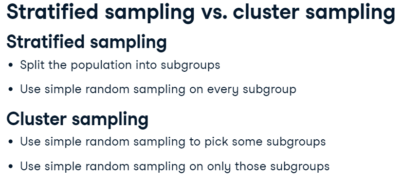
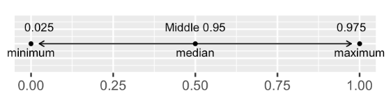
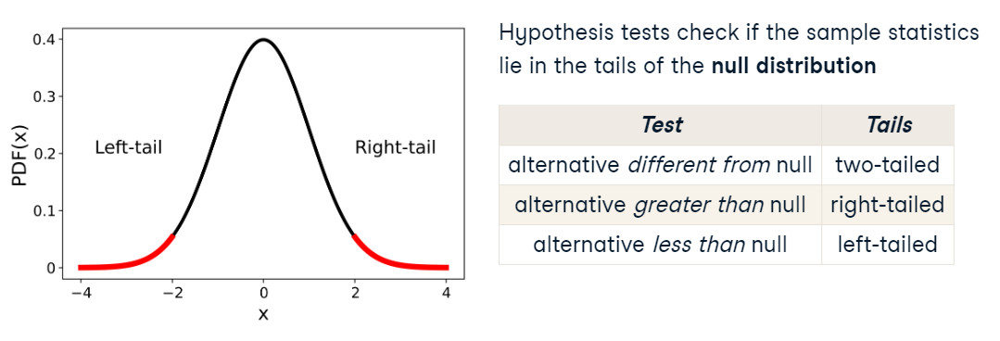
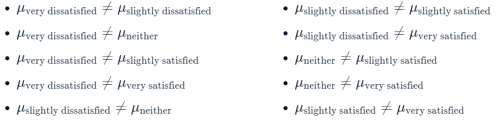
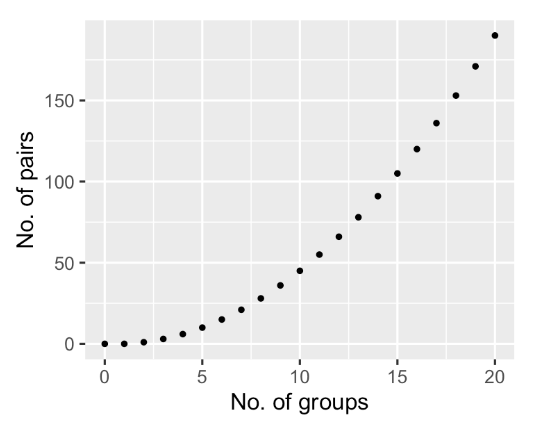
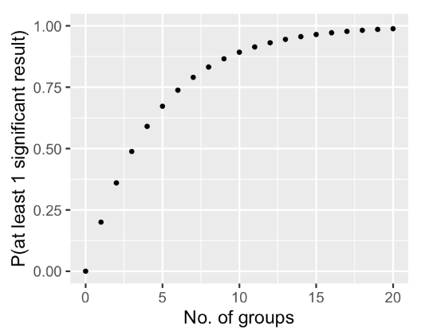
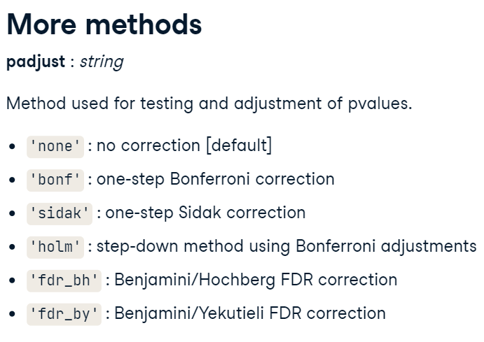
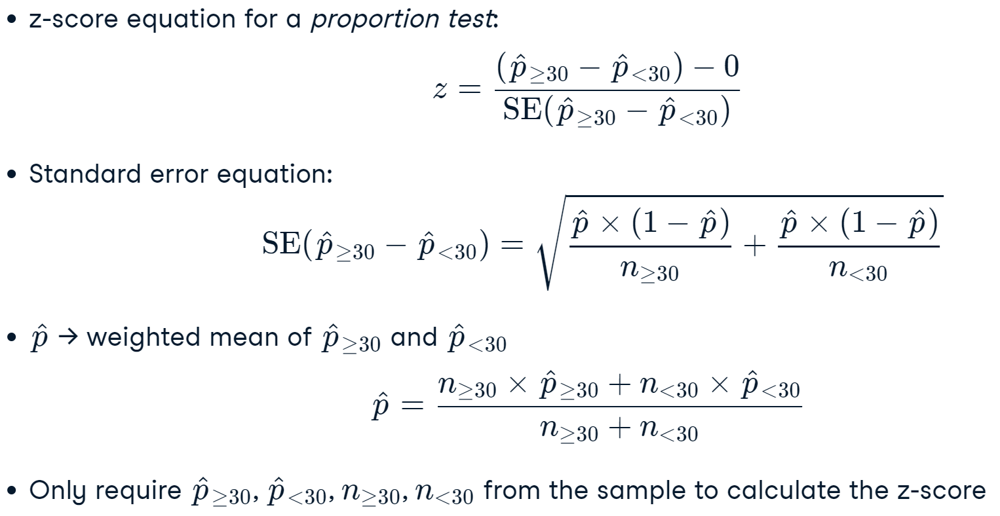
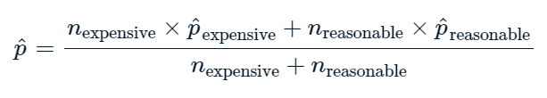
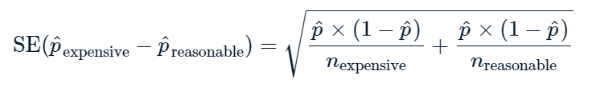

Inferential Statistics & Sampling#
Sampling#
Samples are extracted from the population and must meet two requirements:
Must be statistically significant (big enough to take conclusion)
not biased
There are 3 types of sampling:
simple random sampling
systematic sampling
stratified sampling
pip install -r requirements.txt
^C
Collecting pingouin==0.5.3 (from -r requirements.txt (line 1))
Using cached pingouin-0.5.3-py3-none-any.whl (198 kB)
Requirement already satisfied: numpy>=1.19 in c:\users\admin\miniconda3\lib\site-packages (from pingouin==0.5.3->-r requirements.txt (line 1)) (1.25.2)
Requirement already satisfied: scipy>=1.7 in c:\users\admin\miniconda3\lib\site-packages (from pingouin==0.5.3->-r requirements.txt (line 1)) (1.11.2)
Requirement already satisfied: pandas>=1.0 in c:\users\admin\miniconda3\lib\site-packages (from pingouin==0.5.3->-r requirements.txt (line 1)) (2.1.0)
Collecting matplotlib>=3.0.2 (from pingouin==0.5.3->-r requirements.txt (line 1))
Using cached matplotlib-3.7.2-cp311-cp311-win_amd64.whl (7.5 MB)
Collecting seaborn>=0.11 (from pingouin==0.5.3->-r requirements.txt (line 1))
Using cached seaborn-0.12.2-py3-none-any.whl (293 kB)
Collecting statsmodels>=0.13 (from pingouin==0.5.3->-r requirements.txt (line 1))
Using cached statsmodels-0.14.0-cp311-cp311-win_amd64.whl (9.2 MB)
Requirement already satisfied: scikit-learn in c:\users\admin\miniconda3\lib\site-packages (from pingouin==0.5.3->-r requirements.txt (line 1)) (1.3.0)
Collecting pandas-flavor>=0.2.0 (from pingouin==0.5.3->-r requirements.txt (line 1))
Using cached pandas_flavor-0.6.0-py3-none-any.whl (7.2 kB)
Collecting outdated (from pingouin==0.5.3->-r requirements.txt (line 1))
Using cached outdated-0.2.2-py2.py3-none-any.whl (7.5 kB)
Requirement already satisfied: tabulate in c:\users\admin\miniconda3\lib\site-packages (from pingouin==0.5.3->-r requirements.txt (line 1)) (0.9.0)
Requirement already satisfied: contourpy>=1.0.1 in c:\users\admin\miniconda3\lib\site-packages (from matplotlib>=3.0.2->pingouin==0.5.3->-r requirements.txt (line 1)) (1.1.0)
Requirement already satisfied: cycler>=0.10 in c:\users\admin\miniconda3\lib\site-packages (from matplotlib>=3.0.2->pingouin==0.5.3->-r requirements.txt (line 1)) (0.11.0)
Requirement already satisfied: fonttools>=4.22.0 in c:\users\admin\miniconda3\lib\site-packages (from matplotlib>=3.0.2->pingouin==0.5.3->-r requirements.txt (line 1)) (4.42.1)
Requirement already satisfied: kiwisolver>=1.0.1 in c:\users\admin\miniconda3\lib\site-packages (from matplotlib>=3.0.2->pingouin==0.5.3->-r requirements.txt (line 1)) (1.4.5)
Requirement already satisfied: packaging>=20.0 in c:\users\admin\miniconda3\lib\site-packages (from matplotlib>=3.0.2->pingouin==0.5.3->-r requirements.txt (line 1)) (23.0)
Requirement already satisfied: pillow>=6.2.0 in c:\users\admin\miniconda3\lib\site-packages (from matplotlib>=3.0.2->pingouin==0.5.3->-r requirements.txt (line 1)) (10.0.0)
Requirement already satisfied: pyparsing<3.1,>=2.3.1 in c:\users\admin\miniconda3\lib\site-packages (from matplotlib>=3.0.2->pingouin==0.5.3->-r requirements.txt (line 1)) (3.0.9)
Requirement already satisfied: python-dateutil>=2.7 in c:\users\admin\miniconda3\lib\site-packages (from matplotlib>=3.0.2->pingouin==0.5.3->-r requirements.txt (line 1)) (2.8.2)
Requirement already satisfied: pytz>=2020.1 in c:\users\admin\miniconda3\lib\site-packages (from pandas>=1.0->pingouin==0.5.3->-r requirements.txt (line 1)) (2023.3.post1)
Requirement already satisfied: tzdata>=2022.1 in c:\users\admin\miniconda3\lib\site-packages (from pandas>=1.0->pingouin==0.5.3->-r requirements.txt (line 1)) (2023.3)
Collecting xarray (from pandas-flavor>=0.2.0->pingouin==0.5.3->-r requirements.txt (line 1))
Using cached xarray-2023.8.0-py3-none-any.whl (1.0 MB)
Requirement already satisfied: patsy>=0.5.2 in c:\users\admin\miniconda3\lib\site-packages (from statsmodels>=0.13->pingouin==0.5.3->-r requirements.txt (line 1)) (0.5.3)
Requirement already satisfied: setuptools>=44 in c:\users\admin\miniconda3\lib\site-packages (from outdated->pingouin==0.5.3->-r requirements.txt (line 1)) (67.8.0)
Requirement already satisfied: littleutils in c:\users\admin\miniconda3\lib\site-packages (from outdated->pingouin==0.5.3->-r requirements.txt (line 1)) (0.2.2)
Requirement already satisfied: requests in c:\users\admin\miniconda3\lib\site-packages (from outdated->pingouin==0.5.3->-r requirements.txt (line 1)) (2.29.0)
Requirement already satisfied: joblib>=1.1.1 in c:\users\admin\miniconda3\lib\site-packages (from scikit-learn->pingouin==0.5.3->-r requirements.txt (line 1)) (1.3.2)
Requirement already satisfied: threadpoolctl>=2.0.0 in c:\users\admin\miniconda3\lib\site-packages (from scikit-learn->pingouin==0.5.3->-r requirements.txt (line 1)) (3.2.0)
Requirement already satisfied: six in c:\users\admin\miniconda3\lib\site-packages (from patsy>=0.5.2->statsmodels>=0.13->pingouin==0.5.3->-r requirements.txt (line 1)) (1.16.0)
Requirement already satisfied: charset-normalizer<4,>=2 in c:\users\admin\miniconda3\lib\site-packages (from requests->outdated->pingouin==0.5.3->-r requirements.txt (line 1)) (2.0.4)
Requirement already satisfied: idna<4,>=2.5 in c:\users\admin\miniconda3\lib\site-packages (from requests->outdated->pingouin==0.5.3->-r requirements.txt (line 1)) (3.4)
Requirement already satisfied: urllib3<1.27,>=1.21.1 in c:\users\admin\miniconda3\lib\site-packages (from requests->outdated->pingouin==0.5.3->-r requirements.txt (line 1)) (1.26.16)
Requirement already satisfied: certifi>=2017.4.17 in c:\users\admin\miniconda3\lib\site-packages (from requests->outdated->pingouin==0.5.3->-r requirements.txt (line 1)) (2023.5.7)
Installing collected packages: outdated, matplotlib, xarray, statsmodels, seaborn, pandas-flavor, pingouin
Note: you may need to restart the kernel to use updated packages.
import numpy as np
import pandas as pd
import matplotlib.pyplot as plt
import seaborn as sns
import random
import io
import math
from scipy.stats import norm
from scipy.stats import t
import scipy.stats as stats
import pingouin
Database to work#
Database of the mexican government, contains information about hotels, museums and marketplaces at “El centro historico de la Ciudad de Mexico”
econdata = pd.read_csv("econdata.csv")
econdata.head()
| id | geo_point_2d | geo_shape | clave_cat | delegacion | perimetro | tipo | nom_id | |
|---|---|---|---|---|---|---|---|---|
| 0 | 0 | 19.424781053,-99.1327537959 | {"type": "Polygon", "coordinates": [[[-99.1332... | 307_130_11 | Cuauhtémoc | B | Mercado | Pino Suárez |
| 1 | 1 | 19.4346139576,-99.1413808393 | {"type": "MultiPoint", "coordinates": [[-99.14... | 002_008_01 | Cuautémoc | A | Museo | Museo Nacional de Arquitectura Palacio de Bell... |
| 2 | 2 | 19.4340695945,-99.1306348409 | {"type": "MultiPoint", "coordinates": [[-99.13... | 006_002_12 | Cuautémoc | A | Museo | Santa Teresa |
| 3 | 3 | 19.42489472,-99.12073393 | {"type": "MultiPoint", "coordinates": [[-99.12... | 323_102_06 | Venustiano Carranza | B | Hotel | Balbuena |
| 4 | 4 | 19.42358238,-99.12451093 | {"type": "MultiPoint", "coordinates": [[-99.12... | 323_115_12 | Venustiano Carranza | B | Hotel | real |
Types of sampling#
Simple random sampling#
This technique consists of just extracting completely random samples
rand1 = econdata.sample(n=8)
rand1
| id | geo_point_2d | geo_shape | clave_cat | delegacion | perimetro | tipo | nom_id | |
|---|---|---|---|---|---|---|---|---|
| 30 | 30 | 19.427530818,-99.1479200065 | {"type": "MultiPoint", "coordinates": [[-99.14... | 002_068_13 | Cuautémoc | B | Hotel | Villa Pal |
| 103 | 103 | 19.4370810464,-99.1361494106 | {"type": "MultiPoint", "coordinates": [[-99.13... | 004_091_27 | Cuautémoc | A | Hotel | Cuba |
| 145 | 145 | 19.4340221684,-99.1358187396 | {"type": "MultiPoint", "coordinates": [[-99.13... | 001_012_11 | Cuautémoc | A | Hotel | Rioja |
| 65 | 65 | 19.425466805,-99.1380880561 | {"type": "MultiPoint", "coordinates": [[-99.13... | 001_073_20 | Cuautémoc | B | Hotel | Mar |
| 125 | 125 | 19.4342350395,-99.1354548065 | {"type": "MultiPoint", "coordinates": [[-99.13... | 001_007_06 | Cuautémoc | A | Hotel | Zamora |
| 25 | 25 | 19.42477346,-99.12881894 | {"type": "MultiPoint", "coordinates": [[-99.12... | 307_123_30 | Cuautémoc | B | Hotel | Madrid |
| 111 | 111 | 19.4430614318,-99.1353793874 | {"type": "MultiPoint", "coordinates": [[-99.13... | 004_107_02 | Cuautémoc | B | Hotel | Embajadores |
| 59 | 59 | 19.4275850427,-99.1397624613 | {"type": "MultiPoint", "coordinates": [[-99.13... | 001_061_03 | Cuautémoc | A | Hotel | Señorial |
You can do it by specifying a seed
Example:
set a seed: 18900217
rand2 = econdata.sample(n=8, random_state=18900217)
rand2
| id | geo_point_2d | geo_shape | clave_cat | delegacion | perimetro | tipo | nom_id | |
|---|---|---|---|---|---|---|---|---|
| 69 | 69 | 19.43558625,-99.12965746 | {"type": "MultiPoint", "coordinates": [[-99.12... | 005_129_08 | Cuautémoc | A | Hotel | Templo Mayor |
| 180 | 180 | 19.4357633849,-99.1330511805 | {"type": "MultiPoint", "coordinates": [[-99.13... | 004_094_32 | Cuautémoc | A | Hotel | Catedral, S.A. DE C.V. |
| 25 | 25 | 19.42477346,-99.12881894 | {"type": "MultiPoint", "coordinates": [[-99.12... | 307_123_30 | Cuautémoc | B | Hotel | Madrid |
| 83 | 83 | 19.4342251093,-99.1449434443 | {"type": "MultiPoint", "coordinates": [[-99.14... | 002_018_03 | Cuautémoc | B | Hotel | San Francisco |
| 27 | 27 | 19.4348360773,-99.1463945583 | {"type": "MultiPoint", "coordinates": [[-99.14... | 002_016_01 | Cuautémoc | B | Hotel | Hilton Centro Histórico |
| 181 | 181 | 19.4451852396,-99.1478597989 | {"type": "MultiPoint", "coordinates": [[-99.14... | 012_103_01 | Cuautémoc | B | Hotel | Yale |
| 117 | 117 | 19.4253041176,-99.1405962735 | {"type": "MultiPoint", "coordinates": [[-99.14... | 001_078_03 | Cuautémoc | B | Hotel | Mazatlán |
| 182 | 182 | 19.42407591,-99.1424737531 | {"type": "MultiPoint", "coordinates": [[-99.14... | 001_094_26 | Cuautémoc | B | Hotel | Macao |
# Extract a random 25% of your population
prop_25 = econdata.sample(frac = .25)
prop_25
| id | geo_point_2d | geo_shape | clave_cat | delegacion | perimetro | tipo | nom_id | |
|---|---|---|---|---|---|---|---|---|
| 61 | 61 | 19.4343847692,-99.125125489 | {"type": "Polygon", "coordinates": [[[-99.1257... | 005_140_01 | Cuauhtémoc | B | Mercado | Mixcalco |
| 138 | 138 | 19.4330991176,-99.1423784309 | {"type": "MultiPoint", "coordinates": [[-99.14... | 002_024_08 | Cuautémoc | B | Hotel | Marlowe |
| 33 | 33 | 19.4341938751,-99.1352210651 | {"type": "MultiPoint", "coordinates": [[-99.13... | 001_007_04 | Cuautémoc | A | Hotel | Washingtonw |
| 178 | 178 | 19.4457531395,-99.1485982115 | {"type": "MultiPoint", "coordinates": [[-99.14... | 012_069_11 | Cuautémoc | B | Hotel | Norte |
| 3 | 3 | 19.42489472,-99.12073393 | {"type": "MultiPoint", "coordinates": [[-99.12... | 323_102_06 | Venustiano Carranza | B | Hotel | Balbuena |
| 161 | 161 | 19.4356652812,-99.1386591361 | {"type": "MultiPoint", "coordinates": [[-99.13... | 001_003_12 | Cuautémoc | A | Museo | La Tortura |
| 190 | 190 | 19.43311885,-99.14512643 | {"type": "MultiPoint", "coordinates": [[-99.14... | 002_019_02 | Cuautémoc | B | Hotel | Metropol |
| 124 | 124 | 19.4297560476,-99.1253498219 | {"type": "MultiPoint", "coordinates": [[-99.12... | 006_052_01 | Cuautémoc | A | Hotel | Universo |
| 63 | 63 | 19.4339116282,-99.1468371035 | {"type": "MultiPoint", "coordinates": [[-99.14... | 002_015_07 | Cuautémoc | B | Hotel | Calvin |
| 229 | 229 | 19.4346765421,-99.1318394918 | {"type": "MultiPoint", "coordinates": [[-99.13... | 005_145_14 | Cuautémoc | A | Museo | Templo Mayor |
| 70 | 70 | 19.43712772,-99.1378899 | {"type": "MultiPoint", "coordinates": [[-99.13... | 004_090_02 | Cuautémoc | A | Hotel | Congreso |
| 195 | 195 | 19.4414840739,-99.1394736635 | {"type": "MultiPoint", "coordinates": [[-99.13... | 004_050_13 | Cuautémoc | B | Hotel | Emperador |
| 12 | 12 | 19.43990186,-99.14813347 | {"type": "MultiPoint", "coordinates": [[-99.14... | 003_079_16 | Cuautémoc | B | Hotel | La Paz |
| 191 | 191 | 19.43985567,-99.14782916 | {"type": "MultiPoint", "coordinates": [[-99.14... | 003_079_12 | Cuautémoc | B | Hotel | Ferrol |
| 11 | 11 | 19.4219963186,-99.1437414652 | {"type": "MultiPoint", "coordinates": [[-99.14... | 002_103_18 | Cuautémoc | B | Hotel | Faro |
| 113 | 113 | 19.43374405,-99.13550135 | {"type": "MultiPoint", "coordinates": [[-99.13... | 001_012_13 | Cuautémoc | A | Hotel | San Antonio |
| 149 | 149 | 19.43031663,-99.12465191 | {"type": "MultiPoint", "coordinates": [[-99.12... | 323_035_01 | Venustiano Carranza | B | Hotel | Liverpool |
| 26 | 26 | 19.4262321913,-99.1238893146 | {"type": "Polygon", "coordinates": [[[-99.1241... | 323_064_01 | Venustiano Carranza | B | Mercado | La Merced Nave Mayor |
| 78 | 78 | 19.4430578017,-99.13614342 | {"type": "Polygon", "coordinates": [[[-99.1368... | 004_107_01 | Cuauhtémoc | B | Mercado | La Lagunilla |
| 37 | 37 | 19.4271233834,-99.125111772 | {"type": "Polygon", "coordinates": [[[-99.1251... | 323_065_01 | Venustiano Carranza | B | Mercado | Dulceria |
| 42 | 42 | 19.4368553413,-99.1196435872 | {"type": "MultiPoint", "coordinates": [[-99.11... | 018_337_01 | Venustiano Carranza | B | Hotel | HOTEL RRO MI1O |
| 146 | 146 | 19.4373584031,-99.1383047535 | {"type": "MultiPoint", "coordinates": [[-99.13... | 004_090_14 | Cuautémoc | A | Hotel | Congreso Garage |
| 130 | 130 | 19.4351458312,-99.1282270238 | {"type": "MultiPoint", "coordinates": [[-99.12... | 005_114_34 | Cuautémoc | A | Museo | Sinagoga Histórica de Justo Sierra |
| 81 | 81 | 19.42262452,-99.15107339 | {"type": "MultiPoint", "coordinates": [[-99.15... | 002_096_02 | Cuautémoc | B | Hotel | Imperio |
| 82 | 82 | 19.4220369889,-99.120775543 | {"type": "MultiPoint", "coordinates": [[-99.12... | 423_013_18 | Venustiano Carranza | B | Hotel | Cordoba |
| 142 | 142 | 19.4263681354,-99.1327278126 | {"type": "MultiPoint", "coordinates": [[-99.13... | 006_127_14 | Cuautémoc | A | Hotel | Ambar |
| 226 | 226 | 19.4416748524,-99.1365878489 | {"type": "Polygon", "coordinates": [[[-99.1370... | 004_052_01 | Cuauhtémoc | B | Mercado | De Muebles |
| 175 | 175 | 19.4291934671,-99.1323328561 | {"type": "MultiPoint", "coordinates": [[-99.13... | 006_073_11 | Cuautémoc | A | Museo | La Ciudad de México |
| 123 | 123 | 19.4378770032,-99.1358867181 | {"type": "MultiPoint", "coordinates": [[-99.13... | 004_086_36 | Cuautémoc | A | Hotel | Florida |
| 68 | 68 | 19.4273142523,-99.1255788881 | {"type": "MultiPoint", "coordinates": [[-99.12... | 006_082_02 | Cuautémoc | A | Hotel | Anpudia |
| 126 | 126 | 19.42774805,-99.12796532 | {"type": "MultiPoint", "coordinates": [[-99.12... | 006_078_04 | Cuautémoc | A | Hotel | San Marcos |
| 136 | 136 | 19.4263840955,-99.1429192037 | {"type": "MultiPoint", "coordinates": [[-99.14... | 002_084_14 | Cuautémoc | B | Hotel | Miguel Ángel |
| 153 | 153 | 19.4241764183,-99.1254198454 | {"type": "MultiPoint", "coordinates": [[-99.12... | 323_133_29 | Venustiano Carranza | B | Hotel | Navio |
| 39 | 39 | 19.4369818158,-99.1426877718 | {"type": "MultiPoint", "coordinates": [[-99.14... | 003_095_04 | Cuautémoc | A | Museo | Museo Nacional de La Estampa |
| 194 | 194 | 19.4288786806,-99.1456731565 | {"type": "MultiPoint", "coordinates": [[-99.14... | 002_060_04 | Cuautémoc | B | Hotel | San Diego, S.A. DE C.V. |
| 107 | 107 | 19.4248237343,-99.1311696681 | {"type": "Polygon", "coordinates": [[[-99.1313... | 307_128_04 | Cuauhtémoc | B | Mercado | San Lucas |
| 135 | 135 | 19.4300009578,-99.1430773295 | {"type": "Polygon", "coordinates": [[[-99.1431... | 002_045_01 | Cuauhtémoc | B | Mercado | Centro Artesanal "San Juan" |
| 50 | 50 | 19.427412415,-99.1425547699 | {"type": "Polygon", "coordinates": [[[-99.1427... | 002_064_05 | Cuauhtémoc | B | Mercado | San Juan No.78 |
| 99 | 99 | 19.4438918423,-99.1402516182 | {"type": "MultiPoint", "coordinates": [[-99.14... | 003_052_18 | Cuautémoc | B | Hotel | Drigales |
| 211 | 211 | 19.4325804122,-99.146356862 | {"type": "MultiPoint", "coordinates": [[-99.14... | 002_032_01 | Cuautémoc | B | Hotel | Fleming |
| 159 | 159 | 19.4337392469,-99.1311991819 | {"type": "MultiPoint", "coordinates": [[-99.13... | 006_001_06 | Cuautémoc | A | Museo | Arte de la Secretaria de Hacienda y Credito Pu... |
| 207 | 207 | 19.4344738803,-99.1305689118 | {"type": "MultiPoint", "coordinates": [[-99.13... | 006_002_13 | Cuautémoc | A | Museo | Autonomía Universitaria |
| 179 | 179 | 19.421906236,-99.1246612487 | {"type": "Polygon", "coordinates": [[[-99.1250... | 423_006_01 | Venustiano Carranza | B | Mercado | Mercado Sonora |
| 6 | 6 | 19.43553422,-99.12324801 | {"type": "MultiPoint", "coordinates": [[-99.12... | 318_116_11 | Venustiano Carranza | B | Hotel | San Antonio Tomatlan |
| 7 | 7 | 19.436244494,-99.1477350326 | {"type": "MultiPoint", "coordinates": [[-99.14... | 002_004-03 | Cuautémoc | B | Hotel | Fontan Reforma |
| 65 | 65 | 19.425466805,-99.1380880561 | {"type": "MultiPoint", "coordinates": [[-99.13... | 001_073_20 | Cuautémoc | B | Hotel | Mar |
| 215 | 215 | 19.4383767258,-99.1331865203 | {"type": "MultiPoint", "coordinates": [[-99.13... | 004_082_16 | Cuautémoc | A | Hotel | La Fontelina , S.A. DE C.V. |
| 223 | 223 | 19.4285106481,-99.1367967407 | {"type": "MultiPoint", "coordinates": [[-99.13... | 001_055_10 | Cuautémoc | A | Hotel | Niza |
| 91 | 91 | 19.42981826,-99.14607091 | {"type": "MultiPoint", "coordinates": [[-99.14... | 002_059_01 | Cuautémoc | B | Hotel | Pugibet |
| 19 | 19 | 19.4317119617,-99.1269115285 | {"type": "MultiPoint", "coordinates": [[-99.12... | 006_026_28 | Cuautémoc | A | Museo | Alondiga La Merced |
| 221 | 221 | 19.4386933829,-99.1481075783 | {"type": "MultiPoint", "coordinates": [[-99.14... | 003_103_26 | Cuautémoc | A | Hotel | San Fernando |
| 137 | 137 | 19.4421185698,-99.1482841686 | {"type": "MultiPoint", "coordinates": [[-99.14... | 012_108_03 | Cuautémoc | B | Hotel | Lepanto |
| 32 | 32 | 19.4369607249,-99.1354098031 | {"type": "MultiPoint", "coordinates": [[-99.13... | 004_101_20 | Cuautémoc | A | Hotel | Habana, S.A. |
| 121 | 121 | 19.4303083246,-99.1405735286 | {"type": "MultiPoint", "coordinates": [[-99.14... | 001_043_15 | Cuautémoc | A | Hotel | El Salvador |
| 210 | 210 | 19.43082385,-99.12366058 | {"type": "MultiPoint", "coordinates": [[-99.12... | 323_029_08 | Venustiano Carranza | B | Hotel | Hispano |
| 168 | 168 | 19.4349726565,-99.147766133 | {"type": "MultiPoint", "coordinates": [[-99.14... | 002_014_23 | Cuautémoc | B | Hotel | One Alameda |
| 100 | 100 | 19.4337759404,-99.1378211234 | {"type": "MultiPoint", "coordinates": [[-99.13... | 001_014_06 | Cuautémoc | A | Hotel | Ritz Ciudada de México |
| 196 | 196 | 19.4437017048,-99.1325438818 | {"type": "MultiPoint", "coordinates": [[-99.13... | 004_043_06 | Cuautémoc | B | Hotel | Boston |
Systematic sampling#
This technique extracts samples based on a condition or rule
example:
Let’s define a function to take samples each \(n\) rows
# let's take samples each 3 rows
def systematic_sampling(econdata, step):
indexes = np.arange(0, len(econdata), step=step)
systematic_sample = econdata.iloc[indexes]
return systematic_sample
systematic_sample = systematic_sampling(econdata,3)
systematic_sample.head(20)
| id | geo_point_2d | geo_shape | clave_cat | delegacion | perimetro | tipo | nom_id | |
|---|---|---|---|---|---|---|---|---|
| 0 | 0 | 19.424781053,-99.1327537959 | {"type": "Polygon", "coordinates": [[[-99.1332... | 307_130_11 | Cuauhtémoc | B | Mercado | Pino Suárez |
| 3 | 3 | 19.42489472,-99.12073393 | {"type": "MultiPoint", "coordinates": [[-99.12... | 323_102_06 | Venustiano Carranza | B | Hotel | Balbuena |
| 6 | 6 | 19.43553422,-99.12324801 | {"type": "MultiPoint", "coordinates": [[-99.12... | 318_116_11 | Venustiano Carranza | B | Hotel | San Antonio Tomatlan |
| 9 | 9 | 19.4407152937,-99.1498060057 | {"type": "MultiPoint", "coordinates": [[-99.14... | 012_146_22 | Cuautémoc | B | Hotel | Detroit |
| 12 | 12 | 19.43990186,-99.14813347 | {"type": "MultiPoint", "coordinates": [[-99.14... | 003_079_16 | Cuautémoc | B | Hotel | La Paz |
| 15 | 15 | 19.42413788,-99.1324515 | {"type": "MultiPoint", "coordinates": [[-99.13... | 307_153_11 | Cuautémoc | B | Hotel | San Lucas |
| 18 | 18 | 19.4331161255,-99.1309438719 | {"type": "MultiPoint", "coordinates": [[-99.13... | 006_021_01 | Cuautémoc | A | Museo | Museo Nacional de las Culturas |
| 21 | 21 | 19.43614459,-99.13945267 | {"type": "MultiPoint", "coordinates": [[-99.13... | 004_098_01 | Cuautémoc | A | Museo | Telégrafo |
| 24 | 24 | 19.4285279152,-99.147008562 | {"type": "MultiPoint", "coordinates": [[-99.14... | 002_067_19 | Cuautémoc | B | Hotel | Fornos |
| 27 | 27 | 19.4348360773,-99.1463945583 | {"type": "MultiPoint", "coordinates": [[-99.14... | 002_016_01 | Cuautémoc | B | Hotel | Hilton Centro Histórico |
| 30 | 30 | 19.427530818,-99.1479200065 | {"type": "MultiPoint", "coordinates": [[-99.14... | 002_068_13 | Cuautémoc | B | Hotel | Villa Pal |
| 33 | 33 | 19.4341938751,-99.1352210651 | {"type": "MultiPoint", "coordinates": [[-99.13... | 001_007_04 | Cuautémoc | A | Hotel | Washingtonw |
| 36 | 36 | 19.4425777264,-99.1292760518 | {"type": "Polygon", "coordinates": [[[-99.1288... | 005_077_01 | Cuauhtémoc | B | Mercado | Granaditas |
| 39 | 39 | 19.4369818158,-99.1426877718 | {"type": "MultiPoint", "coordinates": [[-99.14... | 003_095_04 | Cuautémoc | A | Museo | Museo Nacional de La Estampa |
| 42 | 42 | 19.4368553413,-99.1196435872 | {"type": "MultiPoint", "coordinates": [[-99.11... | 018_337_01 | Venustiano Carranza | B | Hotel | HOTEL RRO MI1O |
| 45 | 45 | 19.4438839913,-99.1361724518 | {"type": "MultiPoint", "coordinates": [[-99.13... | 004_040_11 | Cuautémoc | B | Hotel | Guadalajara |
| 48 | 48 | 19.4454876095,-99.1454023878 | {"type": "Polygon", "coordinates": [[[-99.1457... | 003_045_01 | Cuauhtémoc | B | Mercado | Martínez de la Torre Anexo |
| 51 | 51 | 19.4357182545,-99.1308788314 | {"type": "MultiPoint", "coordinates": [[-99.13... | 005_129_16 | Cuautémoc | A | Museo | Antiguo Colegio de San Idelfonso |
| 54 | 54 | 19.4263645964,-99.1399088724 | {"type": "MultiPoint", "coordinates": [[-99.13... | 001_076_12 | Cuautémoc | B | Hotel | Cadillac, S.A. DE C.V. |
| 57 | 57 | 19.4303913751,-99.1465372648 | {"type": "MultiPoint", "coordinates": [[-99.14... | 002_048_10 | Cuautémoc | B | Hotel | Conde |
Samples equally distanced#
Now, Let’s take 10 samples equally distanced
sample_size = 10
interval = int( len(econdata) / sample_size )
econdata.iloc[::interval]#.reset_index()
| id | geo_point_2d | geo_shape | clave_cat | delegacion | perimetro | tipo | nom_id | |
|---|---|---|---|---|---|---|---|---|
| 0 | 0 | 19.424781053,-99.1327537959 | {"type": "Polygon", "coordinates": [[[-99.1332... | 307_130_11 | Cuauhtémoc | B | Mercado | Pino Suárez |
| 23 | 23 | 19.4390916028,-99.1493421468 | {"type": "MultiPoint", "coordinates": [[-99.14... | 012_147_01 | Cuautémoc | B | Hotel | La Fuente |
| 46 | 46 | 19.426941681,-99.1326869759 | {"type": "MultiPoint", "coordinates": [[-99.13... | 006_090_12 | Cuautémoc | A | Hotel | Castropol |
| 69 | 69 | 19.43558625,-99.12965746 | {"type": "MultiPoint", "coordinates": [[-99.12... | 005_129_08 | Cuautémoc | A | Hotel | Templo Mayor |
| 92 | 92 | 19.4383554723,-99.1327563513 | {"type": "MultiPoint", "coordinates": [[-99.13... | 004_082_19 | Cuautémoc | A | Hotel | Tuxpan |
| 115 | 115 | 19.4336966991,-99.1237253904 | {"type": "MultiPoint", "coordinates": [[-99.12... | 323_010_09 | Venustiano Carranza | B | Hotel | Antas |
| 138 | 138 | 19.4330991176,-99.1423784309 | {"type": "MultiPoint", "coordinates": [[-99.14... | 002_024_08 | Cuautémoc | B | Hotel | Marlowe |
| 161 | 161 | 19.4356652812,-99.1386591361 | {"type": "MultiPoint", "coordinates": [[-99.13... | 001_003_12 | Cuautémoc | A | Museo | La Tortura |
| 184 | 184 | 19.4306993983,-99.1389056387 | {"type": "MultiPoint", "coordinates": [[-99.13... | 001_043_01 | Cuautémoc | A | Hotel | La Casa de la Luna, S.A. DE C.V. |
| 207 | 207 | 19.4344738803,-99.1305689118 | {"type": "MultiPoint", "coordinates": [[-99.13... | 006_002_13 | Cuautémoc | A | Museo | Autonomía Universitaria |
Stratified sampling#
This type of sampling consists in creating homogeneus exclusive groups and from there, create a random sample
Proportional stratified sample#
Suppose you have a dataset and you would like to take a sample that has the same proportions as the population
penguins = sns.load_dataset("penguins")
penguins["species"].value_counts(normalize=True)
Adelie 0.441860
Gentoo 0.360465
Chinstrap 0.197674
Name: species, dtype: float64
In that case you have:
Group by the column that contains the proportion
Sample using the frac= argument, to base in a proportion
prop_sample = penguins.groupby("species").sample(frac=0.1)
prop_sample["species"].value_counts(normalize=True)
Adelie 0.441176
Gentoo 0.352941
Chinstrap 0.205882
Name: species, dtype: float64
Note that the sample still contains the same proportion than the original dataset does. In addition, it contains a random 10% of the original data
Equal count stratified sampling#
This process allows to take an equal number of samples based on a variable
equal_sample = penguins.groupby("species").sample(n=15)
equal_sample["species"].value_counts(normalize=True)
Chinstrap 0.333333
Gentoo 0.333333
Adelie 0.333333
Name: species, dtype: float64
Weighted random sampling#
this one adjusts the relative probability of a row being sampled
Example:
Let’s take samples so that Adelie has the double of probability
first you must create a column, assign 2 if the specie is Adelie, otherwise assign 1
condition = penguins["species"] == "Adelie"
penguins["weight"] = np.where(condition, 2, 1)
Now take the sample with the argument weight
penguins_weight = penguins.sample(frac=0.1, weights="weight")
penguins_weight["species"].value_counts(normalize=True)
Adelie 0.676471
Gentoo 0.205882
Chinstrap 0.117647
Name: species, dtype: float64
Proportional stratified sample (given a proportion)#
In this case, we are not neccesarily sampling based on a dataset proportion. Now we are going to provide the proportion to our funtion.
# 1st step: Create your stratification variable
econdata["estratificado"] = econdata["delegacion"] + ", " + econdata["tipo"]
(econdata["estratificado"].value_counts()/len(econdata)).sort_values(ascending=False)
Cuautémoc, Hotel 0.643478
Cuautémoc, Museo 0.156522
Venustiano Carranza, Hotel 0.078261
Cuauhtémoc, Mercado 0.073913
Venustiano Carranza, Mercado 0.047826
Name: estratificado, dtype: float64
The output above shows the proportion of the variables in the dataset.
Suppose now you want to extract a sample with the following proportion:
Cuautémoc,Hotel 0.5 Cuautémoc,Museo 0.2 Venustiano Carranza,Hotel 0.1 Cuauhtémoc,Mercado 0.1 Venustiano Carranza,Mercado 0.1
Let’s create a function that can extract a sample with that given proportion.
def stratified_data(econdata, strat_cols, strat_values, strat_prop, random_state=None):
df_strat = pd.DataFrame(columns=econdata.columns)
pos = -1
for i in range(len(strat_values)):
pos += 1
if pos == len(strat_values) - 1:
ratio_len = len(econdata) - len(df_strat)
else:
ratio_len = int(len(econdata) * strat_prop[i])
df_filtered = econdata[econdata[strat_cols] == strat_values[i]]
df_temp = df_filtered.sample(replace=True, n=ratio_len, random_state=random_state)
df_strat = pd.concat([df_strat, df_temp])
return df_strat
strat_values = list(econdata["estratificado"].unique())
strat_prop = [0.5, 0.2, 0.1, 0.1, 0.1]
# Using the function with the given parameters
df_strat = stratified_data(econdata, "estratificado", strat_values, strat_prop, random_state=42)
df_strat
| id | geo_point_2d | geo_shape | clave_cat | delegacion | perimetro | tipo | nom_id | estratificado | |
|---|---|---|---|---|---|---|---|---|---|
| 78 | 78 | 19.4430578017,-99.13614342 | {"type": "Polygon", "coordinates": [[[-99.1368... | 004_107_01 | Cuauhtémoc | B | Mercado | La Lagunilla | Cuauhtémoc, Mercado |
| 162 | 162 | 19.4452741596,-99.1443205075 | {"type": "Polygon", "coordinates": [[[-99.1448... | 003_044_01 | Cuauhtémoc | B | Mercado | Martínez de la Torre | Cuauhtémoc, Mercado |
| 129 | 129 | NaN | NaN | 005_125_01 | Cuauhtémoc | A | Mercado | Abelardo | Cuauhtémoc, Mercado |
| 79 | 79 | 19.4299360348,-99.1445730919 | {"type": "Polygon", "coordinates": [[[-99.1450... | 002_047_11 | Cuauhtémoc | B | Mercado | San Juan | Cuauhtémoc, Mercado |
| 78 | 78 | 19.4430578017,-99.13614342 | {"type": "Polygon", "coordinates": [[[-99.1368... | 004_107_01 | Cuauhtémoc | B | Mercado | La Lagunilla | Cuauhtémoc, Mercado |
| ... | ... | ... | ... | ... | ... | ... | ... | ... | ... |
| 128 | 128 | 19.4270781084,-99.1210175514 | {"type": "Polygon", "coordinates": [[[-99.1214... | 323_061_04(123) | Venustiano Carranza | B | Mercado | San Ciprian | Venustiano Carranza, Mercado |
| 37 | 37 | 19.4271233834,-99.125111772 | {"type": "Polygon", "coordinates": [[[-99.1251... | 323_065_01 | Venustiano Carranza | B | Mercado | Dulceria | Venustiano Carranza, Mercado |
| 163 | 163 | 19.4265454033,-99.1224859032 | {"type": "Polygon", "coordinates": [[[-99.1231... | 323_063_05 | Venustiano Carranza | B | Mercado | NaN | Venustiano Carranza, Mercado |
| 156 | 156 | 19.4255480371,-99.1249308096 | {"type": "Polygon", "coordinates": [[[-99.1253... | 323_138_04 (3) | Venustiano Carranza | B | Mercado | Mariscos | Venustiano Carranza, Mercado |
| 37 | 37 | 19.4271233834,-99.125111772 | {"type": "Polygon", "coordinates": [[[-99.1251... | 323_065_01 | Venustiano Carranza | B | Mercado | Dulceria | Venustiano Carranza, Mercado |
230 rows × 9 columns
let’s confirm if the proportion is the desired
(
(df_strat["estratificado"].value_counts()/len(econdata))
.sort_values(ascending=False)
)
Cuauhtémoc, Mercado 0.5
Cuautémoc, Museo 0.2
Venustiano Carranza, Hotel 0.1
Venustiano Carranza, Mercado 0.1
Cuautémoc, Hotel 0.1
Name: estratificado, dtype: float64
Cluster sampling#
Cluster sampling consists in taking some subgroups using random sampling
And then use simple random sampling in those groups
Bonus: Calculate mean per categories#
Whenever you want to calculate an average for a variable bases on a category, you can use the pandas function groupby(). The expression is:
DataFrame.Groupby(“categorical_variable”)[“Numerical_variable”].mean()
attrition_pop = pd.read_csv("HR-Employee-Attrition.csv")
This database contains some data from Human Resources.
Let’s calculate the average hourly rate based on the field of study:
attrition_pop.groupby("EducationField")["HourlyRate"].mean()
EducationField
Human Resources 60.888889
Life Sciences 66.831683
Marketing 66.150943
Medical 65.280172
Other 62.365854
Technical Degree 66.621212
Name: HourlyRate, dtype: float64
Relative error#
This measure calculates the error of our sample compared to the population
Calculate relative error#
let’s compare the error of the average hourly rate of all the employees vs the average hourly rate of a random 50 employees sample
# take a 50 rows sample, set the seed to 2022
sample = attrition_pop.sample(n=50, random_state=202)
# mean of the population
pop_mean = attrition_pop["HourlyRate"].mean()
# mean of the sample
sample_mean = sample["HourlyRate"].mean()
# Relative error
(abs(pop_mean-sample_mean)/pop_mean)*100
1.7435473879826704
Relative error vs sample size#
population_mean = attrition_pop["HourlyRate"].mean()
sample_mean = []
n = []
for i in range(len(attrition_pop["HourlyRate"])):
sample_mean.append(attrition_pop.sample(n=i+1)["HourlyRate"].mean())
n.append(i+1)
#Turn sample_mean into a numpy array
sample_mean = np.array(sample_mean)
#Calculate the relative error (%)
rel_error_pct = 100 * abs(population_mean-sample_mean)/population_mean
plt.plot(n, rel_error_pct)
plt.xlabel("Sample size (n)")
plt.ylabel("Relative error (%)")
plt.show()
Sampling distribution#
Each time you perform a simple random sampling, you will obtain different values for your statistics.
In this example, the sample mean is different each time you repeat the sampling process.
A distribution of replicates of sample means (or other point estimates, is known as a sampling distribution)
mean_hourlyrate = []
for i in range(500):
mean_hourlyrate.append(
attrition_pop.sample(n=60)["HourlyRate"].mean()
)
plt.hist(mean_hourlyrate, bins=16)
plt.show()
Approximating sampling distributions#
Sometimes it is computationally imposible to calculate statistics based on a population because it is huge. In those cases, instead of considering all the population, you just take a sample.
In this case, let’s consider the mean value obtained from roll
n_dice = list(range(1, 101))
n_outcomes = []
for n in n_dice:
n_outcomes.append(6**n)
outcomes = pd.DataFrame(
{
"n_dice" : n_dice,
"n_outcomes" : n_outcomes
}
)
outcomes.plot(
x = "n_dice",
y = "n_outcomes",
kind = "scatter"
)
plt.show()
/shared-libs/python3.9/py/lib/python3.9/site-packages/pandas/plotting/_matplotlib/core.py:1041: UserWarning: No data for colormapping provided via 'c'. Parameters 'cmap' will be ignored
scatter = ax.scatter(
Bootstrapping#
Concept#
When you have a dataset, which clearly doesn’t represent the hold population. You can treat the dataset as a sample and use it to build a theoretical population. this is possible by using a resampling technique whith replacement
Example:
Let’s use the coffee rating dataset. This dataset contains information about professional ratings for different brands of coffees coming from many countries.
Let’s suposse
coffee_ratings = pd.read_csv(
"https://raw.githubusercontent.com/rfordatascience/tidytuesday/master/data/2020/2020-07-07/coffee_ratings.csv"
)
Let’s use just three columns to make it simple (and store the indexes)
coffee_focus = coffee_ratings[["variety", "country_of_origin", "flavor"]].reset_index()
and now let’s take a sample
coffee_resamp = coffee_focus.sample(frac=1, replace=True)
#frac=1 makes the sample size as big as the dataset
Now see that there are some repeated values, and some others were not even sampled
coffee_resamp["index"].value_counts()
822 5
906 5
809 5
1235 5
1284 4
..
537 1
539 1
541 1
542 1
1337 1
Name: index, Length: 850, dtype: int64
How many records didn’t end up in the resample dataset?
len(coffee_ratings) - len(coffee_resamp.drop_duplicates(subset="index"))
489
☝️☝️☝️☝️ this is the amount of samples that didn’t end up in the resample (for this random resample)
Now, what if we extract the mean of this resample, it would be
np.mean(coffee_resamp["flavor"])
7.514794622852876
Actually Bootstrapping#
AND NOW LET’S REPEAT THIS PROCESS 1000 TIMES AND SAVE THE MEAN VALUES THAT WE GET FOR EACH RESAMPLE
AND THEN LET’S PLOT THAT TO SEE WHAT HAPPENS
means = []
for i in range(1000):
means.append(
np.mean(
coffee_focus.sample(frac=1, replace=True)["flavor"]
)
)
plt.hist(means)
plt.show()
What we have calculated is known as the Bootstrap distribution for the sample mean
Make a resample of the same size as the original sample
Calculate the statistic of interest for this bootstrap sample
PUT THAT INTO A FOR TO DO IT A LOT OF TIMES
The resulting statistics are bootstrap statistics and they form a bootstrap distribution
Bootstrap statistics to estimate population parameters#
You can extract two main statistics from the bootstrap distribution
Mean
Standard deviation
Mean#
Tipically, the bootstrap mean will be almost identical to the sample mean
The sample mean is not neccesarily similar to the population mean
Therefore, the bootstrap mean is not a good estimation of the population mean
Standard Deviation#
The standard deviation of the bootstrap distribution (AKA standard error) is very useful to estimate the population standard deviation
\(Population std.dev \approx Std.Error * \sqrt{n}\)
# Population Standard deviation
coffee_ratings["flavor"].std(ddof=0)
0.3982932757401295
# Sample Standard deviation
coffee_sample = coffee_ratings["flavor"].sample(n=500, replace=False)
coffee_sample.std()
0.33832690787637093
# Estimated population stantard deviation
# 1. Bootstrapping the sample
bootstrapped_means = []
for i in range(5000):
bootstrapped_means.append(
np.mean(coffee_sample.sample(frac=1, replace=True))
)
# 2. Calculating standard error
standard_error = np.std(bootstrapped_means, ddof=1) # ddof=1 because it's a sample std
# 3. Calculating n
n = len(coffee_sample)
# 4, population stantard deviation = to std_error * sqrt(n)
standard_error * np.sqrt(n)
0.3365273584545509
Bootstrapping vs sampling distribution to estimate the mean#
simple random sample#
spotify_population = pd.read_feather("spotify_2000_2020.feather")
spotify_sample = spotify_population.sample(n=10000)
sampling distribution#
mean_popularity_2000_samp = []
# Generate a sampling distribution of 2000 replicates
for i in range(2000):
mean_popularity_2000_samp.append(
# Sample 500 rows and calculate the mean popularity
spotify_population["popularity"].sample(n=500).mean()
)
# Print the sampling distribution results
plt.hist(mean_popularity_2000_samp)
plt.show()
bootstrap distribution#
mean_popularity_2000_boot = []
# Generate a bootstrap distribution of 2000 replicates
for i in range(2000):
mean_popularity_2000_boot.append(
# Resample 500 rows and calculate the mean popularity
spotify_sample["popularity"].sample(frac=1, replace=True).mean()
)
# Print the bootstrap distribution results
plt.hist(mean_popularity_2000_boot)
plt.show()
# Calculate the population mean popularity
pop_mean = spotify_population["popularity"].mean()
# Calculate the original sample mean popularity
samp_mean = spotify_sample["popularity"].mean()
# Calculate the sampling dist'n estimate of mean popularity
samp_distn_mean = np.mean(mean_popularity_2000_samp)
# Calculate the bootstrap dist'n estimate of mean popularity
boot_distn_mean = np.mean(mean_popularity_2000_boot)
# Print the means
print([pop_mean, samp_mean, samp_distn_mean, boot_distn_mean])
[54.837142308430955, 54.8411, 54.824535000000004, 54.8397755]
dist_media_muestral = []
# Generate a sampling distribution of 2000 replicates
for i in range(2000):
dist_media_muestral.append(
# Sample 500 rows and calculate the mean popularity
coffee_ratings["flavor"].sample(n=500).mean()
)
np.std(dist_media_muestral, ddof=1) * np.sqrt(500)
0.3169816193457466
# Population Standard deviation
coffee_ratings["flavor"].std(ddof=0)
0.3982932757401295
Confidence intervals#
Confidence intervals define a range within the parameter or an statistic should be with a given certainty percentage.
Given a dataset, there are two ways of calculating confidence intervals (tipically 95%)
Search from 2.5% to 97.5% of the dataset (Quantile method)
Use the inverse of the cumulative density function and adjust it’s parameters (standard error method)
Quantile method for confidence intervals#
To provide a 95% confidence interval for the normal distribution. We take the data contained within the 2.5 and 97.5 quantiles

Let’s do an example with the standard normal distribution.
# Generating a standard normal distribution
standard_normal = np.random.normal(0,1,1000000)
for the normal standard distribution:
np.quantile(standard_normal, 0.025)
-1.9557793224830742
for the normal standard distribution:
np.quantile(standard_normal, 0.975)
1.9647666250156202
standard error method for confidence intervals#
This method uses the Inverse Cumulative Distribution Function
First, let’s remember the Cumulative Distribution Function for a normal standard distribution
cumulative_density_function = []
for i in np.linspace(-5, 5, 1001):
cumulative_density_function.append(norm.cdf(i, loc=0, scale=1))
plt.plot(np.linspace(-5, 5, 1001), cumulative_density_function)
plt.show()
Now, if you flip the x and y axis, you obtain the inverse of the cumulative density function
inverse_cumulative_density_function = []
for i in np.linspace(-5, 5, 1001):
inverse_cumulative_density_function.append(norm.ppf(i, loc=0, scale=1))
plt.plot(np.linspace(-5, 5, 1001), inverse_cumulative_density_function)
plt.show()
norm.ppf(0.025, loc= 0, scale=1)
-1.9599639845400545
the method consists of:
Calculate the point estimate: Which is the mean of the bootstrap distribution.
Calculate the standard error: Which is the standard deviation of the bootstrap distribution
Use the Inverse of the cumulative density function: Finally, call the norm.ppf() using the paramers
the mean should be the point estimate of your distribution
the standard deviation must be the standard error of your distribution
sources:
Datacamp: Sampling in python Platzi: Estadistica Inferencial
Hypotesis testing#
Concept#
HYPOTHESIS TESTS DETERMINE WETHER THE SAMPLE STATISTICS LIE IN THE TAILS OF THE NULL DISTRIBUION
NULL DISTRIBUION: distribution of the statistic if the null hypothesis was true.
There are three types of tests. And the phrasing of the alternative hypothesis determines which type we should use
If we are checking for a difference compared to a hypothesized value, we look for extreme values in either tail and perform a two-tailed test
If the alternative hypothesis (\(H_1\)) uses language like “less” or “fewer”, we perform a left tailed test
If the alternative hypothesis (\(H_1\)) uses language like “greater” or “exceeds”, correspond to a right tailed test

Assumptions#
Every hypothesis has the following assumptions:
each sample is randomly sourced from its population
this assumption exists because if the sample is not random, then it won’t be representative of the population
each observation is independent
the only exception for this rule is the paired t-test (section 7) just because the data measures the same observation at a different time.
the fact than observations are dependent or independent change the calculations, not accounting for dependencies when they exist results in an increased chance of false negative or false positive error. Also, not accounting for dependencies is a problem hard to detect, and ideally needs to be discussed before data collection
to verify this assumption, you have to know your data source, there are no statistical tests to verify this assumption. The best way to onboard this problem is to ask people involved in the data collection, or a domain expert that understands the population being sampled.
large sample size
These tests also assume that the sample is big enough that the central limit theorem applies and we can assume that the sample distribution is normal.
smaller samples incur greater uncertainty, implicating that central limith theorem does not apply and the sampling distributions might not be normally distributed
Also, the uncertainty generated by small sample means we get wider confidence intervals on the parameter we are trying to estimate
Now, How big our sample needs to be? depends on the test and will be shown across the upcoming chapters
If the sample size is small In case of having small sample sizes not everything is lost, we can still work with them if the null distribution seems normal
Sanity check#
One more check we can perform is to calcuate a bootstrap distribution and visualize it with a histogram, if we don’t see a bell shaped normal curve, then one of the assumptions hasn’t been met, in that case revisit the data collection process and check for
randomness
independence
sample size
Hypothesis test (mean)#
Steps to perform hypothesis testing#
1. Define the null hypothesis and alternative hypothesis#
2. Calculate the Z-score#
since variables have arbitrary units and ranges, before we test our hypotesis, we need to standardize the values:
\(standardizedvalue = \frac{value - mean}{standard deviation}\)
But for hypotesis testing, we use a variation
z_score = \(\frac{sample statistic - hypoth.param.value}{standard error}\)
note:
sample statistic: is the statistic taken from your dataset or from the information you have
hypothesis parameter value: is the parameter that you define in your alternative hypothesis \(H_1\)
standard error: is the standard deviation of the bootstrap distribution
3. Calculate the P-value#
Once you get the Z-score, you can now calculate the P-value. The calculation of the P-value depends on the test that you are performing
for left-tailed test
p_value = norm.cdf(z_score, loc=0, scale=1)
for right-tailed test
p_value = 1 - norm.cdf(z_score, loc=0, scale=1)
for two-tailed test
p_value = 2 * norm.cdf(z_score, loc=0, scale=1)
Note: norm.cdf() is a function of the scipy.stats library
to run it properly, run: from scipy.stats import norm
Finally, if the p-value is less than 0.05 (for a 0.05 significance level), you can reject the null hypothesis. Otherwise, you fail to reject the null hypothesis#
Example1. TWO TAILED TEST#
context#
The dataset below contains information about the stack overflow yearly survey filtered to get answers only from people who consider theirselves as data scientist.
stack_overflow = pd.read_feather("stack_overflow.feather")
stack_overflow.head()
| respondent | main_branch | hobbyist | age | age_1st_code | age_first_code_cut | comp_freq | comp_total | converted_comp | country | ... | survey_length | trans | undergrad_major | webframe_desire_next_year | webframe_worked_with | welcome_change | work_week_hrs | years_code | years_code_pro | age_cat | |
|---|---|---|---|---|---|---|---|---|---|---|---|---|---|---|---|---|---|---|---|---|---|
| 0 | 36.0 | I am not primarily a developer, but I write co... | Yes | 34.0 | 30.0 | adult | Yearly | 60000.0 | 77556.0 | United Kingdom | ... | Appropriate in length | No | Computer science, computer engineering, or sof... | Express;React.js | Express;React.js | Just as welcome now as I felt last year | 40.0 | 4.0 | 3.0 | At least 30 |
| 1 | 47.0 | I am a developer by profession | Yes | 53.0 | 10.0 | child | Yearly | 58000.0 | 74970.0 | United Kingdom | ... | Appropriate in length | No | A natural science (such as biology, chemistry,... | Flask;Spring | Flask;Spring | Just as welcome now as I felt last year | 40.0 | 43.0 | 28.0 | At least 30 |
| 2 | 69.0 | I am a developer by profession | Yes | 25.0 | 12.0 | child | Yearly | 550000.0 | 594539.0 | France | ... | Too short | No | Computer science, computer engineering, or sof... | Django;Flask | Django;Flask | Just as welcome now as I felt last year | 40.0 | 13.0 | 3.0 | Under 30 |
| 3 | 125.0 | I am not primarily a developer, but I write co... | Yes | 41.0 | 30.0 | adult | Monthly | 200000.0 | 2000000.0 | United States | ... | Appropriate in length | No | None | None | None | Just as welcome now as I felt last year | 40.0 | 11.0 | 11.0 | At least 30 |
| 4 | 147.0 | I am not primarily a developer, but I write co... | No | 28.0 | 15.0 | adult | Yearly | 50000.0 | 37816.0 | Canada | ... | Appropriate in length | No | Another engineering discipline (such as civil,... | None | Express;Flask | Just as welcome now as I felt last year | 40.0 | 5.0 | 3.0 | Under 30 |
5 rows × 63 columns
Let’s hypothesize that the mean anual compensation of the population of data scientists is 110.000 dollars
\(H_0\) : The mean anual compensation of the population of data scientists is different from 110.000 dollars
\(H_1\) : The mean anual compensation of the population of data scientists is 110.000 dollars
stack_overflow["converted_comp"].mean()
119574.71738168952
The result is different from our hypotesis, but, is it meaningfully different?
To answer that, we generate a bootstrap distribution of sample means
so_boot_distn = []
for i in range(5000):
so_boot_distn.append(
np.mean(
stack_overflow.sample(frac=1, replace=True)["converted_comp"]
)
)
plt.hist(so_boot_distn, bins=50)
plt.show()
Notice that 110.000 is on the left of the distribution
Now, if we calculate the standard error (a.k.a standard deviation of the bootstrap distribution):
np.std(so_boot_distn, ddof=1)
5671.35937802767
since variables have arbitrary units and ranges, before we test our hypotesis, we need to standardize the values:
\(standardizedvalue = \frac{value - mean}{standard deviation}\)
But for hypotesis testing, we use a variation
\(z = \frac{sample statistic - hypoth.param.value}{standard error}\)
the result is called Z score
Calculating Z-score#
z_score = ( stack_overflow["converted_comp"].mean() - 110000 ) / np.std(so_boot_distn, ddof=1)
z_score
1.6882579190422111
Calculating P-value#
Since this is a two-tailed test, the pvalue is:
p_value = norm.cdf(z_score, loc=0, scale=1) * 2
p_value = 2 * ( 1 - norm.cdf(z_score, loc=0, scale=1) )
p_value
0.09136172933530817
And with this p-value and a significance level of 0.05, we failed to reject the null hypothesis and can conclude that the mean anual compensation of the population of data scientists is different from 110.000 dollars
Example2. RIGHT TAILED TEST#
context#
For this example, we will use the same dataframe of the stackoverflow survey for data scientists.
The variable age_first_code_cut classifies when Stack Overflow user first started programming
“adult” means they started at 14 or older
“child” means they started before 14
Let’s perform a hypothesis testing
\(H_0\) : The proportion of data scientists starting programming as children is 35%
\(H_1\) : The proportion of data scientists starting programming as children is greater than 35%
stack_overflow["age_first_code_cut"].head()
0 adult
1 child
2 child
3 adult
4 adult
Name: age_first_code_cut, dtype: object
We initially assume that the null hypothesis \(H_0\) is true. This only changes if the sample provides enough evidence to reject it.
Now let’s calculate the Zscore
Calculating Z score#
# Point estimate
prop_child_samp = (stack_overflow["age_first_code_cut"] == "child").mean()
prop_child_samp
0.39141972578505085
# hypothesized statistic
prop_child_hyp = 0.35
# std_error
first_code_boot_distn = []
# bootstrap distribution
for i in range (5000):
first_code_boot_distn.append(
(stack_overflow.sample(frac=1, replace=True)["age_first_code_cut"] == "child").mean()
)
std_error = np.std(first_code_boot_distn, ddof = 1)
std_error
0.0104640957859478
# Z-score
z_score = (prop_child_samp - prop_child_hyp) / std_error
z_score
3.958270894335017
Calculating P-value#
Now, pass the z-score to the standard normal CDF (cumulative density function for standard normal distribution)
norm.cdf(z_score, loc=0, scale=1)
0.9999622528463471
And for final, as we are performing a right tail test, the P-value is calculated by taking
\(1 - norm.cdf()\)
p_value = 1 - norm.cdf(z_score, loc=0, scale=1)
p_value
3.77471536529006e-05
Therefore with a significance level of 0.05, we reject the null hypothesis and we can state that
The proportion of data scientists starting programming as children is greater than 35%
Example 3: RIGHT TAILED TEST#
context#
The late_shipments dataset contains supply chain data on the delivery of medical supplies. Each row represents one delivery of a part. The late columns denotes whether or not the part was delivered late.
late_shipments = pd.read_feather("late_shipments.feather")
late_shipments.head()
| id | country | managed_by | fulfill_via | vendor_inco_term | shipment_mode | late_delivery | late | product_group | sub_classification | ... | line_item_quantity | line_item_value | pack_price | unit_price | manufacturing_site | first_line_designation | weight_kilograms | freight_cost_usd | freight_cost_groups | line_item_insurance_usd | |
|---|---|---|---|---|---|---|---|---|---|---|---|---|---|---|---|---|---|---|---|---|---|
| 0 | 36203.0 | Nigeria | PMO - US | Direct Drop | EXW | Air | 1.0 | Yes | HRDT | HIV test | ... | 2996.0 | 266644.00 | 89.00 | 0.89 | Alere Medical Co., Ltd. | Yes | 1426.0 | 33279.83 | expensive | 373.83 |
| 1 | 30998.0 | Botswana | PMO - US | Direct Drop | EXW | Air | 0.0 | No | HRDT | HIV test | ... | 25.0 | 800.00 | 32.00 | 1.60 | Trinity Biotech, Plc | Yes | 10.0 | 559.89 | reasonable | 1.72 |
| 2 | 69871.0 | Vietnam | PMO - US | Direct Drop | EXW | Air | 0.0 | No | ARV | Adult | ... | 22925.0 | 110040.00 | 4.80 | 0.08 | Hetero Unit III Hyderabad IN | Yes | 3723.0 | 19056.13 | expensive | 181.57 |
| 3 | 17648.0 | South Africa | PMO - US | Direct Drop | DDP | Ocean | 0.0 | No | ARV | Adult | ... | 152535.0 | 361507.95 | 2.37 | 0.04 | Aurobindo Unit III, India | Yes | 7698.0 | 11372.23 | expensive | 779.41 |
| 4 | 5647.0 | Uganda | PMO - US | Direct Drop | EXW | Air | 0.0 | No | HRDT | HIV test - Ancillary | ... | 850.0 | 8.50 | 0.01 | 0.00 | Inverness Japan | Yes | 56.0 | 360.00 | reasonable | 0.01 |
5 rows × 27 columns
1. Calculate the proportion of late shipments
prop = (late_shipments["late"] == "Yes").mean()
prop
0.061
So, now we know that 0.061 or 6.1% of the sipments were late.
Let’s hipothesize that the proportion of late shipments is 6%
\(H_0\): The proportion of late shipments is 6%
\(H_1\): The proportion of late shipments is greater that 6%
and calculate a z score based on that hypothesis
Calculating Z score#
late_shipments_boot_distn = []
# bootstrap distribution
for i in range (5000):
late_shipments_boot_distn.append(
(late_shipments.sample(frac=1, replace=True)["late"] == "Yes").mean()
)
# standard error
std_error = np.std(late_shipments_boot_distn, ddof=1)
# remember:
# z_score = (sample statistc - hypothesized statistic) / standard error
z_score = (prop - 0.06) / std_error
z_score
0.1318317224271221
And we got a z score of 0.13.
Now let’s calculate the pvalue
Calculating P-value#
# Remember
# For right tailed test, p_value = 1 - norm.cdf(...)
p_value = 1 - norm.cdf(z_score, loc = 0, scale = 1)
p_value
0.4475586973291411
Since the P-value is greater that 0.05, at a significance level of 0.05, we failed to reject the null hypothesis and the conclusion is: The proportion of late shipments is not greater than 6%
Confirming the results with a confidence interval#
Let’s calculate a confidence interval of 95%
# Calculate 95% confidence interval using quantile method
lower = np.quantile(late_shipments_boot_distn, 0.025)
upper = np.quantile(late_shipments_boot_distn, 0.975)
# Print the confidence interval
print((lower, upper))
(0.047, 0.076)
Note:
Since 0.06 is included in the 95% confidence interval and we failed to reject due to a large p-value, the results are similar.
Hypothesis test (difference of means)#
Assumptions for sample size#
These tests fall in the category of Two-sample t-tests, and we need at least 30 observations in each sample to fulfill the assumption
\(n_1 \geq 30, n_2 \geq 30\)
\(n_i\): sample size for group \(i\)
Example 1. Difference of means (right tailed)#
Context#
The dataset below contains information about the stack overflow yearly survey filtered to get answers only from people who consider theirselves as data scientist.
stack_overflow = pd.read_feather("stack_overflow.feather")
stack_overflow.head()
| respondent | main_branch | hobbyist | age | age_1st_code | age_first_code_cut | comp_freq | comp_total | converted_comp | country | ... | survey_length | trans | undergrad_major | webframe_desire_next_year | webframe_worked_with | welcome_change | work_week_hrs | years_code | years_code_pro | age_cat | |
|---|---|---|---|---|---|---|---|---|---|---|---|---|---|---|---|---|---|---|---|---|---|
| 0 | 36.0 | I am not primarily a developer, but I write co... | Yes | 34.0 | 30.0 | adult | Yearly | 60000.0 | 77556.0 | United Kingdom | ... | Appropriate in length | No | Computer science, computer engineering, or sof... | Express;React.js | Express;React.js | Just as welcome now as I felt last year | 40.0 | 4.0 | 3.0 | At least 30 |
| 1 | 47.0 | I am a developer by profession | Yes | 53.0 | 10.0 | child | Yearly | 58000.0 | 74970.0 | United Kingdom | ... | Appropriate in length | No | A natural science (such as biology, chemistry,... | Flask;Spring | Flask;Spring | Just as welcome now as I felt last year | 40.0 | 43.0 | 28.0 | At least 30 |
| 2 | 69.0 | I am a developer by profession | Yes | 25.0 | 12.0 | child | Yearly | 550000.0 | 594539.0 | France | ... | Too short | No | Computer science, computer engineering, or sof... | Django;Flask | Django;Flask | Just as welcome now as I felt last year | 40.0 | 13.0 | 3.0 | Under 30 |
| 3 | 125.0 | I am not primarily a developer, but I write co... | Yes | 41.0 | 30.0 | adult | Monthly | 200000.0 | 2000000.0 | United States | ... | Appropriate in length | No | None | None | None | Just as welcome now as I felt last year | 40.0 | 11.0 | 11.0 | At least 30 |
| 4 | 147.0 | I am not primarily a developer, but I write co... | No | 28.0 | 15.0 | adult | Yearly | 50000.0 | 37816.0 | Canada | ... | Appropriate in length | No | Another engineering discipline (such as civil,... | None | Express;Flask | Just as welcome now as I felt last year | 40.0 | 5.0 | 3.0 | Under 30 |
5 rows × 63 columns
Two-sample problems compares sample statistics across groups of a variable
for the stack_overflow dataset:
converted_comp is a numerical variable: describes mean salary in USD
age_first_code_cut is a categorical value: describes if people started programming as childs or adults
The Hypothesis question is:
Are those users who first programmed as childs better compensated than those that started as adults?
\(H_0 : \) Population mean for both groups is the same \(H_1 : \) Population mean for those who started as childs is greater that for adults
\(H_0 : \mu_{child} - \mu_{adult} = 0 \)
\(H_1 : \mu_{child} - \mu_{adult} > 0 \)
Use a significance level of 0.05
stack_overflow.groupby("age_first_code_cut")["converted_comp"].mean()
age_first_code_cut
adult 111313.311047
child 132419.570621
Name: converted_comp, dtype: float64
The difference is notorius. But, is that increase statistically significant? or could it be explained by sampling variability?
Calculating T statistic#
In this case, the test statistic for the hypothesis test is \(\bar{x}_{child} - \bar{x}_{adult}\), but in this case you don’t calculate the Z-score but the T stastictic
\(t = \frac{(\bar{x}_{child} - \bar{x}_{adult}) - (\mu_{child} - \mu_{adult})}{SE(\bar{x}_{child} - \bar{x}_{adult})} \)
and
\(SE(\bar{x}_{child} - \bar{x}_{adult}) \approx \sqrt{\frac{s^2_{child}}{n_{child}}+ \frac{s^2_{adult}}{n_{adult}}}\)
Now, since the null hypothesis assumes that the population means are equal, the final equation for t would be:
\(t = \frac{(\bar{x}_{child} - \bar{x}_{adult})}{\sqrt{\frac{s^2_{child}}{n_{child}}+ \frac{s^2_{adult}}{n_{adult}}}}\)
xbar = stack_overflow.groupby("age_first_code_cut")["converted_comp"].mean()
xbar_child = xbar[1]
xbar_adult = xbar[0]
s = stack_overflow.groupby("age_first_code_cut")["converted_comp"].std()
s_child = s[1]
s_adult = s[0]
n = stack_overflow.groupby("age_first_code_cut")["converted_comp"].count()
n_child = n[1]
n_adult = n[0]
numerator = xbar_child - xbar_adult
denominator = np.sqrt( ((s_child**2)/n_child) + ((s_adult**2)/n_adult ) )
t_stat = numerator/denominator
t_stat
1.8699313316221844
Calculating P value#
The t distribution requests a degrees of freedom parameter (degrees of freedom are the amount of independant observations in our dataset).
In this case, there are as many degrees of freedom as observations, minus two, because we already know two sample statistics (the means for each group)
# dof = n - 2
degrees_of_freedom = n_child + n_adult - 2
# since it is a right tailed test
P_value = 1 - t.cdf(t_stat, df=degrees_of_freedom)
P_value
0.030811302165157595
Since the P-value is less than 0.05, we reject the null hypothesis and can conclude that the mean salary for people who started coding as child, is higher than the mean salary for those who started as adults
Solving with pengouin#
# Child compensation
child_compensation = stack_overflow[
stack_overflow["age_first_code_cut"] == "child"]["converted_comp"]
# Adult compensation
adult_compensation = stack_overflow[
stack_overflow["age_first_code_cut"] == "adult"]["converted_comp"]
pingouin.ttest(
x = child_compensation,
y = adult_compensation,
alternative="greater"
)
| T | dof | alternative | p-val | CI95% | cohen-d | BF10 | power | |
|---|---|---|---|---|---|---|---|---|
| T-test | 1.869931 | 1966.979249 | greater | 0.030821 | [2531.75, inf] | 0.079522 | 0.549 | 0.579301 |
Example 2. Difference of means (left tailed)#
Context#
The late_shipments dataset contains supply chain data on the delivery of medical supplies. Each row represents one delivery of a part. The late column denotes whether or not the part was delivered late.
late_shipments = pd.read_feather("late_shipments.feather")
late_shipments.head()
| id | country | managed_by | fulfill_via | vendor_inco_term | shipment_mode | late_delivery | late | product_group | sub_classification | ... | line_item_quantity | line_item_value | pack_price | unit_price | manufacturing_site | first_line_designation | weight_kilograms | freight_cost_usd | freight_cost_groups | line_item_insurance_usd | |
|---|---|---|---|---|---|---|---|---|---|---|---|---|---|---|---|---|---|---|---|---|---|
| 0 | 36203.0 | Nigeria | PMO - US | Direct Drop | EXW | Air | 1.0 | Yes | HRDT | HIV test | ... | 2996.0 | 266644.00 | 89.00 | 0.89 | Alere Medical Co., Ltd. | Yes | 1426.0 | 33279.83 | expensive | 373.83 |
| 1 | 30998.0 | Botswana | PMO - US | Direct Drop | EXW | Air | 0.0 | No | HRDT | HIV test | ... | 25.0 | 800.00 | 32.00 | 1.60 | Trinity Biotech, Plc | Yes | 10.0 | 559.89 | reasonable | 1.72 |
| 2 | 69871.0 | Vietnam | PMO - US | Direct Drop | EXW | Air | 0.0 | No | ARV | Adult | ... | 22925.0 | 110040.00 | 4.80 | 0.08 | Hetero Unit III Hyderabad IN | Yes | 3723.0 | 19056.13 | expensive | 181.57 |
| 3 | 17648.0 | South Africa | PMO - US | Direct Drop | DDP | Ocean | 0.0 | No | ARV | Adult | ... | 152535.0 | 361507.95 | 2.37 | 0.04 | Aurobindo Unit III, India | Yes | 7698.0 | 11372.23 | expensive | 779.41 |
| 4 | 5647.0 | Uganda | PMO - US | Direct Drop | EXW | Air | 0.0 | No | HRDT | HIV test - Ancillary | ... | 850.0 | 8.50 | 0.01 | 0.00 | Inverness Japan | Yes | 56.0 | 360.00 | reasonable | 0.01 |
5 rows × 27 columns
While trying to determine why some shipments are late, you may wonder if the weight of the shipments that were on time is less than the weight of the shipments that were late.
the weight_kilograms variable contains information about the weight of each shipment.
Then the hypothesis would be
\(H_0\): The mean weight of shipments that weren’t late is the same as the mean weight of shipments that were late. -> \(H_0: \mu_{late} = \mu_{on time}\) -> \(H_0: \mu_{late} - \mu_{on time} = 0\)
\(H_1\): The mean weight of shipments that weren’t late is less than the mean weight of shipments that were late. -> \(H_1: \mu_{on time} < \mu_{late} \) -> \(H_1: \mu_{on time} - \mu_{late} < 0\)
Calculating T statistic#
xbar = late_shipments.groupby("late")["weight_kilograms"].mean()
xbar_no = xbar[0]
xbar_yes = xbar[1]
s = late_shipments.groupby("late")["weight_kilograms"].std()
s_no = s[0]
s_yes = s[1]
n = late_shipments.groupby("late")["weight_kilograms"].count()
n_no = n[0]
n_yes = n[1]
# Calculate the numerator of the test statistic
numerator = xbar_no - xbar_yes
# Calculate the denominator of the test statistic
denominator = np.sqrt( ((s_no**2)/n_no) + ((s_yes**2)/n_yes) )
# Calculate the test statistic
t_stat = numerator/denominator
t_stat
-2.3936661778766433
Calculating P-value#
# Calculate the degrees of freedom
degrees_of_freedom = n_no + n_yes - 2
# Calculate the p-value from the test stat
p_value = t.cdf(t_stat, df = degrees_of_freedom)
p_value
0.008432382146249523
In fact, we can now reject the null hypothesis and conclude that the mean weight for those shipments that were delivered late is higher
Hypothesis testing (paired data)#
Assumptions for sample size#
This tests falls into the category of paired-sample t-tests and the assumptions for this category are that we have at least 30 pairs of observations across the samples
No. of rows in our data \(\geq 30\)
Example 1. Difference of means (left tailed)#
Context#
The dataset below, refers to the results for republicans in 2008 and 2012 presidential elections, each row represents a republicans result for presidential elections at a county level
republicans = pd.read_feather("repub_votes_potus_08_12.feather")
republicans
| state | county | repub_percent_08 | repub_percent_12 | diff | |
|---|---|---|---|---|---|
| 0 | Alabama | Hale | 38.957877 | 37.139882 | 1.817995 |
| 1 | Arkansas | Nevada | 56.726272 | 58.983452 | -2.257179 |
| 2 | California | Lake | 38.896719 | 39.331367 | -0.434648 |
| 3 | California | Ventura | 42.923190 | 45.250693 | -2.327503 |
| 4 | Colorado | Lincoln | 74.522569 | 73.764757 | 0.757812 |
| ... | ... | ... | ... | ... | ... |
| 95 | Wisconsin | Burnett | 48.342541 | 52.437478 | -4.094937 |
| 96 | Wisconsin | La Crosse | 37.490904 | 40.577038 | -3.086134 |
| 97 | Wisconsin | Lafayette | 38.104967 | 41.675050 | -3.570083 |
| 98 | Wyoming | Weston | 76.684241 | 83.983328 | -7.299087 |
| 99 | Alaska | District 34 | 77.063259 | 40.789626 | 36.273633 |
100 rows × 5 columns
Given this dataset, the question is:
Was the percentage of republican candidate votes lower in 2008 than in 2012?
\(H_{0}: \mu_{2008} - \mu_{2012} = 0\)
\(H_{1}: \mu_{2008} - \mu_{2012} < 0\)
let´s use a significance level of 0.05
One detail of this dataset is that 2008 and 2012 votes are paired meaning they are not independant
and we want to capture voting patterns in the model
now, for paired analysis, rather than considering the two variables separatedly, we can consider a single variable of the difference. Let´s store that difference in a dataframe called sample_data and the variable called diff
sample_data = republicans
sample_data["diff"] = sample_data["repub_percent_08"] - sample_data["repub_percent_12"]
sample_data["diff"].hist(bins=20)
<AxesSubplot: >
in the histogram, you can notice that most values are between -10 and 0, including an outlier
now let´s calculate the sample mean
xbar_diff = sample_data["diff"].mean()
xbar_diff
-2.877109041242944
now, we can restate the hypothesis in terms of \(\mu_{diff}\)
\(H_{0}: \mu_{diff} = 0\)
\(H_{1}: \mu_{diff} < 0\)
Calculating T statistic#
the t statistic in this case has a slightly variation, the equation in this case would be
\(t = \frac{\bar{x}_{diff} - \mu_{diff}}{\sqrt{\frac{s^2_{diff}}{n_{diff}}}}\)
and also, in this case we know one statistic. Then, the numbers of degrees of freedoms would be the number of records minus one
dof = ndiff - 1
# calculating t
n_diff = len(sample_data)
s_diff = sample_data["diff"].std()
t_stat = (xbar_diff - 0)/np.sqrt((s_diff**2)/n_diff)
t_stat
-5.601043121928489
Calculating P value#
p_value = t.cdf(t_stat, df = n_diff-1)
p_value
9.572537285272411e-08
This means we can reject the null hypothesis and can conclude that the percentage of votes for republicans was lower in 2008 compared to 2012.
solving with pingouin#
The pingouin package provides methods for hypothesis testing and provides an output as a pandas dataframe.
The method that we will use is ttest
The first argument is the series of differences
The argument y specifies the hypothesized difference value from the null hypothesis (in this case is zero)
The alternative hypothesis can be specified as “two-sided” for two tailed tests, “less” for left tailed tests or “greater” for right tailed tests
pingouin.ttest(
x = sample_data["diff"],
y = 0,
alternative = "less"
)
| T | dof | alternative | p-val | CI95% | cohen-d | BF10 | power | |
|---|---|---|---|---|---|---|---|---|
| T-test | -5.601043 | 99 | less | 9.572537e-08 | [-inf, -2.02] | 0.560104 | 1.323e+05 | 1.0 |
And you can see that the result is the same, null hypothesis is rejected
pingouin variation of t-test for paired data#
pingouin offers a variation that requires even less work, which is useful for paired data
pingouin.ttest(
x = sample_data["repub_percent_08"],
y = sample_data["repub_percent_12"],
paired = True, #this argument is very important for paired data
alternative="less"
)
| T | dof | alternative | p-val | CI95% | cohen-d | BF10 | power | |
|---|---|---|---|---|---|---|---|---|
| T-test | -5.601043 | 99 | less | 9.572537e-08 | [-inf, -2.02] | 0.217364 | 1.323e+05 | 0.696338 |
Example 2. Difference of means (two-tailed)#
Context#
The dataset below, refers to the results for democrats in 2012 and 2016 presidential elections, each row represents democrats result for presidential elections at a county level
democrats = pd.read_feather("dem_votes_potus_12_16.feather")
democrats.head()
| state | county | dem_percent_12 | dem_percent_16 | |
|---|---|---|---|---|
| 0 | Alabama | Bullock | 76.305900 | 74.946921 |
| 1 | Alabama | Chilton | 19.453671 | 15.847352 |
| 2 | Alabama | Clay | 26.673672 | 18.674517 |
| 3 | Alabama | Cullman | 14.661752 | 10.028252 |
| 4 | Alabama | Escambia | 36.915731 | 31.020546 |
You’ll explore the difference between the proportion of county-level votes for the Democratic candidate in 2012 and 2016 to identify if the difference is significant. The hypotheses are as follows:
\(H_0\) : The proportion of democratic votes in 2012 and 2016 were the same. \(H_1\) : The proportion of democratic votes in 2012 and 2016 were different.
Solving with pingouin#
pingouin.ttest(
x = democrats['dem_percent_12'],
y = democrats['dem_percent_16'],
paired = True,
alternative = "two-sided"
)
| T | dof | alternative | p-val | CI95% | cohen-d | BF10 | power | |
|---|---|---|---|---|---|---|---|---|
| T-test | 30.298384 | 499 | two-sided | 3.600634e-115 | [6.39, 7.27] | 0.454202 | 2.246e+111 | 1.0 |
then, you can reject the null hypothesis
Hypothesis test (ANOVA)#
Assumptions for sample size#
Since ANOVA compares a numerical value across multiple categories (three or more), we need at least 30 observations in each sample to fulfill the assumption
\(n_i \geq 30\) for all values of \(i\)
When to use ANOVA#
ANOVA tests are used when you want to compare the behavior of a numerical variable between three or more groups
let’s analyze two variables from the stack_overflow dataset
job_sat: describes how satisfied are people with their jobs
converted_comp shows compensation in USD
stack_overflow = pd.read_feather("stack_overflow.feather")
stack_overflow[["job_sat", "converted_comp"]].head()
| job_sat | converted_comp | |
|---|---|---|
| 0 | Slightly satisfied | 77556.0 |
| 1 | Very satisfied | 74970.0 |
| 2 | Very satisfied | 594539.0 |
| 3 | Very satisfied | 2000000.0 |
| 4 | Very satisfied | 37816.0 |
A hypothesis question could be:
Is compensation different across the levels of satisfaction?
The first step is to visualize it in a boxplot
sns.boxplot(
x = stack_overflow["converted_comp"],
y = stack_overflow["job_sat"],
data = stack_overflow
)
plt.show()
And it looks nice, but let’s remove the outliers to see the distribution better
sns.boxplot(
x = stack_overflow["converted_comp"],
y = stack_overflow["job_sat"],
data = stack_overflow,
showfliers = False
)
plt.show()
And looks like there are differences, but are these statistically significant?
Let’s test it using the pingouin.anova method, using a significance level of 0.2
pingouin.anova() method#
pingouin.anova(
data = stack_overflow,
dv = "converted_comp", #Dependant Variable
between= "job_sat"
)
| Source | ddof1 | ddof2 | F | p-unc | np2 | |
|---|---|---|---|---|---|---|
| 0 | job_sat | 4 | 2256 | 4.480485 | 0.001315 | 0.007882 |
This p-value is 0.0013, which is less than 0.2, that indicates that at least two categories of job satisfaction have significant differences between their compensation levels
BUT THIS DOESN’T TELL US WHICH TWO CATEGORIES THEY ARE
to identify which categories are different, you have to compare all the categories as shown below:

pairwise tests#
To do this, let’s use a pairwise test
notice that the three first arguments are the same as ANOVA test, we will discuss the p-adjust shortly
pingouin.pairwise_tests(
data = stack_overflow,
dv = "converted_comp",
between= "job_sat",
padjust= "none"
)
| Contrast | A | B | Paired | Parametric | T | dof | alternative | p-unc | BF10 | hedges | |
|---|---|---|---|---|---|---|---|---|---|---|---|
| 0 | job_sat | Slightly satisfied | Very satisfied | False | True | -4.009935 | 1478.622799 | two-sided | 0.000064 | 158.564 | -0.192931 |
| 1 | job_sat | Slightly satisfied | Neither | False | True | -0.700752 | 258.204546 | two-sided | 0.484088 | 0.114 | -0.068513 |
| 2 | job_sat | Slightly satisfied | Very dissatisfied | False | True | -1.243665 | 187.153329 | two-sided | 0.215179 | 0.208 | -0.145624 |
| 3 | job_sat | Slightly satisfied | Slightly dissatisfied | False | True | -0.038264 | 569.926329 | two-sided | 0.969491 | 0.074 | -0.002719 |
| 4 | job_sat | Very satisfied | Neither | False | True | 1.662901 | 328.326639 | two-sided | 0.097286 | 0.337 | 0.120115 |
| 5 | job_sat | Very satisfied | Very dissatisfied | False | True | 0.747379 | 221.666205 | two-sided | 0.455627 | 0.126 | 0.063479 |
| 6 | job_sat | Very satisfied | Slightly dissatisfied | False | True | 3.076222 | 821.303063 | two-sided | 0.002166 | 7.43 | 0.173247 |
| 7 | job_sat | Neither | Very dissatisfied | False | True | -0.545948 | 321.165726 | two-sided | 0.585481 | 0.135 | -0.058537 |
| 8 | job_sat | Neither | Slightly dissatisfied | False | True | 0.602209 | 367.730081 | two-sided | 0.547406 | 0.118 | 0.055707 |
| 9 | job_sat | Very dissatisfied | Slightly dissatisfied | False | True | 1.129951 | 247.570187 | two-sided | 0.259590 | 0.197 | 0.119131 |
If we analyze the output, in the p-unc column, we will notice that three of them are less than our significance level of 0.2
Note that for pairwise tests, as the number of groups increase, the number of pairs increase cuadratically (in this case we got 10 pairs out of 5 groups)
false positive danger#
And if the pairs increases cuadratically, the number of hypothesis tests we must perform increases cuadratically.
Now, performing a lot of hypothesis tests increase the probability of getting a false positive significant result, the chart below shows the probability of a false positive vs the amount of hypothesis tests ran

Note that:
with a significance level of 0.2, running one test, the probability of a false positive is approximately 0.2!
with 5 groups (which means 10 tests), the probability of false positive is around 0.7!
with 20 groups, it’s almost guaranteed that you will have at least one false positive!
The solution to this problem
The solution for this problem of getting a false positive is to apply an adjustment to increase the p-values (and therefore reducing the probability of false positive)
one common adjustment is the bonferroni correction
p -value adjustment (bonferroni)#
pingouin.pairwise_tests(
data = stack_overflow,
dv = "converted_comp",
between= "job_sat",
padjust= "bonf"
)
| Contrast | A | B | Paired | Parametric | T | dof | alternative | p-unc | p-corr | p-adjust | BF10 | hedges | |
|---|---|---|---|---|---|---|---|---|---|---|---|---|---|
| 0 | job_sat | Slightly satisfied | Very satisfied | False | True | -4.009935 | 1478.622799 | two-sided | 0.000064 | 0.000638 | bonf | 158.564 | -0.192931 |
| 1 | job_sat | Slightly satisfied | Neither | False | True | -0.700752 | 258.204546 | two-sided | 0.484088 | 1.000000 | bonf | 0.114 | -0.068513 |
| 2 | job_sat | Slightly satisfied | Very dissatisfied | False | True | -1.243665 | 187.153329 | two-sided | 0.215179 | 1.000000 | bonf | 0.208 | -0.145624 |
| 3 | job_sat | Slightly satisfied | Slightly dissatisfied | False | True | -0.038264 | 569.926329 | two-sided | 0.969491 | 1.000000 | bonf | 0.074 | -0.002719 |
| 4 | job_sat | Very satisfied | Neither | False | True | 1.662901 | 328.326639 | two-sided | 0.097286 | 0.972864 | bonf | 0.337 | 0.120115 |
| 5 | job_sat | Very satisfied | Very dissatisfied | False | True | 0.747379 | 221.666205 | two-sided | 0.455627 | 1.000000 | bonf | 0.126 | 0.063479 |
| 6 | job_sat | Very satisfied | Slightly dissatisfied | False | True | 3.076222 | 821.303063 | two-sided | 0.002166 | 0.021659 | bonf | 7.43 | 0.173247 |
| 7 | job_sat | Neither | Very dissatisfied | False | True | -0.545948 | 321.165726 | two-sided | 0.585481 | 1.000000 | bonf | 0.135 | -0.058537 |
| 8 | job_sat | Neither | Slightly dissatisfied | False | True | 0.602209 | 367.730081 | two-sided | 0.547406 | 1.000000 | bonf | 0.118 | 0.055707 |
| 9 | job_sat | Very dissatisfied | Slightly dissatisfied | False | True | 1.129951 | 247.570187 | two-sided | 0.259590 | 1.000000 | bonf | 0.197 | 0.119131 |
Now, if we analyze the p-corr column, which is the adjusted p-value, we will note that only two of the pairs have an statistically significant difference
Great! p-value adjustment is the solution for when you have a ton of pairs!
pingouin offers many other options for adjusting the p-values, some are more conservative than others.
Example 2 ANOVA (three categories)#
Given the late shipments data, let’s analyze how the price of each package (pack_price) varies between the three shipment modes (shipment_mode): “Air”, “Air Charter”, and “Ocean”.
late_shipments = pd.read_feather("late_shipments.feather")
late_shipments[["shipment_mode", "pack_price"]].head()
| shipment_mode | pack_price | |
|---|---|---|
| 0 | Air | 89.00 |
| 1 | Air | 32.00 |
| 2 | Air | 4.80 |
| 3 | Ocean | 2.37 |
| 4 | Air | 0.01 |
\(H_0\): Pack prices for every category of shipment mode are the same.
\(H_1\): Pack prices for some categories of shipment mode are different.
\(\alpha = 0.1\)
Checking sample size assumptions#
# Count the shipment_mode values
counts = late_shipments["shipment_mode"].value_counts()
# Print the result
print(counts)
# Inspect whether the counts are big enough
print((counts >= 30).all())
Air 905
Ocean 88
Air Charter 6
Name: shipment_mode, dtype: int64
False
The assumptions are not met for that Air Charter category, therefore, we should be a little cautious of the results given that small sample size.
Exploratory Data Analysis per Group#
let’s explore first with the average price for each group
late_shipments.groupby("shipment_mode")["pack_price"].mean()
shipment_mode
Air 39.712395
Air Charter 4.226667
Ocean 6.432273
Name: pack_price, dtype: float64
Looks like the air is way more expensive than the other two categories
let’s see the dispersion as well:
late_shipments.groupby("shipment_mode")['pack_price'].std()
shipment_mode
Air 48.932861
Air Charter 0.992969
Ocean 5.303047
Name: pack_price, dtype: float64
data for “air” is more dispersed
Now let’s see the boxplots:
sns.boxplot(
x = late_shipments["pack_price"],
y = late_shipments["shipment_mode"],
data = late_shipments
)
plt.show()
Great, now let’s see if this difference statistically significant
Conducting ANOVA#
pingouin.anova(
data = late_shipments,
dv = "pack_price", #Dependant Variable
between= "shipment_mode"
)
| Source | ddof1 | ddof2 | F | p-unc | np2 | |
|---|---|---|---|---|---|---|
| 0 | shipment_mode | 2 | 997 | 21.8646 | 5.089479e-10 | 0.042018 |
the p-unc (p value) indicates that there is difference between at least one pair, let’s perform pairwise tests to confirm which pairs are these
Pairwise tests#
pingouin.pairwise_tests(
data = late_shipments,
dv = "pack_price",
between = "shipment_mode"
)
| Contrast | A | B | Paired | Parametric | T | dof | alternative | p-unc | BF10 | hedges | |
|---|---|---|---|---|---|---|---|---|---|---|---|
| 0 | shipment_mode | Air | Air Charter | False | True | 21.179625 | 600.685682 | two-sided | 8.748346e-75 | 5.809e+76 | 0.726592 |
| 1 | shipment_mode | Air | Ocean | False | True | 19.335760 | 986.979785 | two-sided | 6.934555e-71 | 1.129e+67 | 0.711119 |
| 2 | shipment_mode | Air Charter | Ocean | False | True | -3.170654 | 35.615026 | two-sided | 3.123012e-03 | 15.277 | -0.423775 |
without adjustment, the p value in each test indicates that there is a significant difference between all the pairs, let’s see the results again with the adjustment
P-value adjustment (bonferroni)#
pingouin.pairwise_tests(
data = late_shipments,
dv = "pack_price",
between = "shipment_mode",
padjust = "bonf"
)
| Contrast | A | B | Paired | Parametric | T | dof | alternative | p-unc | p-corr | p-adjust | BF10 | hedges | |
|---|---|---|---|---|---|---|---|---|---|---|---|---|---|
| 0 | shipment_mode | Air | Air Charter | False | True | 21.179625 | 600.685682 | two-sided | 8.748346e-75 | 2.624504e-74 | bonf | 5.809e+76 | 0.726592 |
| 1 | shipment_mode | Air | Ocean | False | True | 19.335760 | 986.979785 | two-sided | 6.934555e-71 | 2.080367e-70 | bonf | 1.129e+67 | 0.711119 |
| 2 | shipment_mode | Air Charter | Ocean | False | True | -3.170654 | 35.615026 | two-sided | 3.123012e-03 | 9.369037e-03 | bonf | 15.277 | -0.423775 |
adjusted p-value shows similar results, all the p-values are smaller than 0.1!
then we can conclude:
for the pairs below, we can reject the null hypothesis that the pack prices are equal:
\(\mu_{air} > \mu_{air-charter}\)
\(\mu_{air} > \mu_{ocean}\)
\(\mu_{ocean} >\mu_{air-charter}\)
Hypothesis test (tests for proportions)#
when you refer to hypothesis tests for proportions,
\(p\) is the population proportion (unknown parameter)
\(\hat{p}\) is the sample proportion (sample statistic)
\(p_0\) is the hypothesized population proportion
Now, when performing the hypothesis testing, the test statistic is:
\(z = \frac{\hat{p} - p_0}{\sqrt{\frac{p_0 * (1 - p_0)}{n}}}\)
Assumptions for sample size#
Since this is a one-sample proportion test, the number of successes and the number of failures in sample is greater than or equal to 10
\(n * \hat{p} \geq 10\)
\(n * (1 - \hat{p}) \geq 10\)
\(n\): sample size \(\hat{p}\): proportion of successes in sample
Example 1 (two-tailed test)#
Context#
Returning to the stack overflow survey, let’s hypothesize that half of the users are under thirty
\(H_0\) : Proportions of stackoverflow users under thirty = 0.5
\(H_1\) : Proportions of stackoverflow users under thirty \(\neq\) 0.5
\(\alpha\) = 0.01
let’s check the sample first
stack_overflow["age_cat"].value_counts(normalize = True)
Under 30 0.535604
At least 30 0.464396
Name: age_cat, dtype: float64
given this information, let’s check our hypothesis
Calculate z score#
p_hat = (stack_overflow["age_cat"] == "Under 30").mean()
p_0 = 0.5
n = len(stack_overflow)
z_score = (p_hat - p_0) / np.sqrt( (p_0 * (1 - p_0))/ n )
z_score
3.385911440783663
Calculating p-value#
#substract from 1 since p-value is positive
p_value = 2 * (1 - norm.cdf(z_score))
p_value
0.0007094227368100725
Since the p_value is less than the alpha, then we can reject the null hypothesis
Example 2 (right tailed test)#
Given the late shipments dataset, let’s Hypothesize that the proportion of late shipments is greater than 6%.
H_0 = proportion of late shipments is 6%.
H_1 = proportion of late shipments is greater than 6%.
late_shipments = pd.read_feather("late_shipments.feather")
Checking for sample size assumptions#
# Count the late values
counts = late_shipments["late"].value_counts()
# Print the result
print(counts)
# Inspect whether the counts are big enough
print((counts >= 10).all())
No 939
Yes 61
Name: late, dtype: int64
True
Since there are more than 10 successes and failures, assumptions are fulfilled
Calculating z-score#
# Hypothesize that the proportion of late shipments is 6%
p_0 = 0.06
# Calculate the sample proportion of late shipments
p_hat = (late_shipments['late'] == "Yes").mean()
# Calculate the sample size
n = len(late_shipments)
# Calculate the numerator and denominator of the test statistic
numerator = p_hat - p_0
denominator = np.sqrt(p_0 * (1 - p_0) / n)
# Calculate the test statistic
z_score = numerator / denominator
Calculating p-value#
# Calculate the p-value from the z-score
p_value = 1 - norm.cdf(z_score)
# Print the p-value
print(p_value)
0.44703503936503364
then, we failed to reject the null hypothesis
Hypothesis test (tests for differences of proportions)#
Assumptions for sample size#
Since this is a two-sample proportion test, the number of successes and the number of failures in each sample is greater than or equal to 10
\(n_1 * \hat{p}_1 \geq 10\) \(n_2 * \hat{p}_2 \geq 10\)
\(n_1 * (1 - \hat{p}_1) \geq 10\) \(n_2 * (1 - \hat{p}_2) \geq 10\)
\(n\): sample size \(\hat{p}\): proportion of successes in sample
Example 1 (two-tailed)#
Context#
In the stack overflow dataset, there is a variable called hobbyist
the value “yes” indicates that the users considers themselves as a hobbyist and “no” indicates that they consider themselves as professionals
\(H_0\): proportion of hobbyist users is the same for those under thirty as those at leats thirty \(H_0\): \(p_{\geq 30} - p_{< 30} = 0 \)
\(H_1\): proportion of hobbyist users is different for those unnder thirty as those at leats thirty \(H_0\): \(p_{\geq 30} - p_{< 30} \neq 0 \)
\(\alpha\) = 0.05
exploring the proportions between the age categories, we get:
stack_overflow.groupby("age_cat")["hobbyist"].value_counts(normalize = True)
age_cat hobbyist
At least 30 Yes 0.773333
No 0.226667
Under 30 Yes 0.843105
No 0.156895
Name: hobbyist, dtype: float64
but, is it statistically significant?
Calculating the Z score#

p_hats = stack_overflow.groupby("age_cat")["hobbyist"].value_counts(normalize = True)
p_hats
age_cat hobbyist
At least 30 Yes 0.773333
No 0.226667
Under 30 Yes 0.843105
No 0.156895
Name: hobbyist, dtype: float64
p_hat_at_least_30 = p_hats[("At least 30", "Yes")]
p_hat_under_30 = p_hats[("Under 30", "Yes")]
print(p_hat_at_least_30, p_hat_under_30)
0.7733333333333333 0.8431048720066061
n = stack_overflow.groupby("age_cat")["hobbyist"].count()
n
age_cat
At least 30 1050
Under 30 1211
Name: hobbyist, dtype: int64
n_at_least_30 = n["At least 30"]
n_under_30 = n["Under 30"]
print(n_at_least_30, n_under_30)
1050 1211
# calculating p_hat
p_hat = (
(n_at_least_30 * p_hat_at_least_30 + n_under_30 * p_hat_under_30)/
(n_at_least_30 + n_under_30)
)
# calculating standard error
std_error = np.sqrt(p_hat * (1 - p_hat) / n_at_least_30 +
p_hat * (1 - p_hat) / n_under_30)
# calculating z-score
z_score = (p_hat_at_least_30 - p_hat_under_30) / std_error
z_score
-4.223691463320559
Calculating p-value#
# p-value for two sided test
2 * norm.cdf(z_score)
2.403330142685068e-05
Therefore, we can reject the null hypothesis
Calculating with statsmodels#
This function requires two arguments:
the number of hobbyists in each category
the total number of rows in each group
stack_overflow.groupby("age_cat")["hobbyist"].value_counts()
age_cat hobbyist
At least 30 Yes 812
No 238
Under 30 Yes 1021
No 190
Name: hobbyist, dtype: int64
n_hobbyists = np.array([812, 1021])
n_hobbyists
array([ 812, 1021])
n_rows = np.array([812 + 238, 1021 + 190])
n_rows
array([1050, 1211])
from statsmodels.stats.proportion import proportions_ztest
z_score, p_value = proportions_ztest(count=n_hobbyists,
nobs=n_rows, alternative="two-sided")
print(z_score, p_value)
-4.223691463320559 2.403330142685068e-05
the p-value is smaller than our alpha, meaning that we can reject the null hypothesis
Example 2 (right tailed)#
Context#
You may wonder if the amount paid for freight affects whether or not the shipment was late. Recall that in the late_shipments dataset, whether or not the shipment was late is stored in the late column. Freight costs are stored in the freight_cost_group column, and the categories are “expensive” and “reasonable”
The hypotheses to test, with “late” corresponding to the proportion of late shipments for that group, are
\(H_{0}: late_{expensive} - late_{reasonable} = 0\) \(H_{1}: late_{expensive} - late_{reasonable} > 0\)
p_hats = (
late_shipments.
groupby("freight_cost_groups")["late"].value_counts(normalize=True)
).filter(like='Yes', axis=0)
p_hats
freight_cost_groups late
expensive Yes 0.079096
reasonable Yes 0.035165
Name: late, dtype: float64
# sample size
ns = late_shipments.groupby("freight_cost_groups")["late"].count()
ns
freight_cost_groups
expensive 531
reasonable 455
Name: late, dtype: int64
Now that we have the p hats and the n, let’s calculate the p-hat

p_hat = (
(p_hats["reasonable"] * ns["reasonable"] +
p_hats["expensive"] * ns["expensive"]) /
(ns["reasonable"] + ns["expensive"])
)
p_hat
late
Yes 0.058824
Name: late, dtype: float64
now that we have the p_hat, let’s calculate the standard error of the sample as follows:

# Calculate the standard error
std_error = np.sqrt(
( ( p_hat * (1 - p_hat) ) / ns["expensive"] )+
( ( p_hat * (1 - p_hat) ) / ns["reasonable"] )
)
std_error
late
Yes 0.015031
Name: late, dtype: float64
Calculating Z score#
z_score = (p_hats["expensive"] - p_hats["reasonable"])/std_error
z_score
late
Yes 2.922649
Name: late, dtype: float64
Calculating p value#
# Right tailed test
p_value = 1 - norm.cdf(z_score)
p_value
array([0.00173534])
With this p-value we can reject the null hypothesis and conclude that the proportion of late deliveries for expensive-priced shipments is greater than the proportion for reasonable-priced shipments
Calculating with statmodels#
# Count the late column values for each freight_cost_group
late_by_freight_cost_group = (
late_shipments.groupby("freight_cost_groups")["late"].value_counts()
)
success_counts
freight_cost_groups late
expensive No 489
Yes 42
reasonable No 439
Yes 16
Name: late, dtype: int64
success_counts = np.array(
[
late_by_freight_cost_group[("expensive","Yes")],
late_by_freight_cost_group[("reasonable","Yes")]
]
)
success_counts
array([42, 16])
n = np.array([
late_by_freight_cost_group["expensive"].sum(),
late_by_freight_cost_group["reasonable"].sum()
])
n
array([531, 455])
stat, p_value = proportions_ztest(
count = success_counts,
nobs = n,
alternative = "larger"
)
print(stat, p_value)
2.922648567784529 0.001735340002359578
And we got the same results, same p-value!
Chi Squared Tests of independance#
Assumptions for sample size#
The number of successes and failures in each group is greater that or equal to 5
\(n_1 * \hat{p}_i \geq 5\)
\(n_1 * (1 - \hat{p}_i) \geq 5\)
\(n_i\): sample size for group \(i\)
\(\hat{p}\): proportion of successes in sample group \(i\)
Example 1#
This test measures the independance between two categorical variables
Two categorical variables are statistically independant when the proportion of successes in the response variable is the same across all the categories of the explanatory variable
let’s use the pingouin package to determine if the “hobbyist” and “age_cat” variables from the stack_overflow survey datasetare independant
\(H_0 :\) Age categories are independent of hobbyist autoperception \(H_1 :\) Age categories are not independent of hobbyist autoperception
props = (
stack_overflow
.groupby("hobbyist")["age_cat"]
.value_counts(normalize = True)
)
wide_props = props.unstack()
wide_props.plot(kind = "bar", stacked = True)
<AxesSubplot: xlabel='hobbyist'>
This chart may suggest that the variables are not indepentant, because looks like the proportion of hobbyists is higher in people under 30.
Let’s confirm if these variables are statistically independant
Calculating degrees of freedom
in this case, there are two categorical variables with two categories each, then the degrees of freedom are calculated:
\(dof =\) (No. of response categories - 1) x (No. of explanatory categories - 1) \(dof = (2-1)*(2-1) = 1\)
Yates’ continuity correction
Is a correction only applied when the sample size is very small and the degrees of freedom is one. Carefull!, the only way to apply it is if \(dof = 1\), otherwise, it won’t be applied by default
In this case, since each group has over 1000 observations, we don’t need it here
expected, observed, stats = pingouin.chi2_independence(
data = stack_overflow,
x = "hobbyist",
y = "age_cat",
correction= False
)
stats
| test | lambda | chi2 | dof | pval | cramer | power | |
|---|---|---|---|---|---|---|---|
| 0 | pearson | 1.000000 | 17.387820 | 1.0 | 0.000030 | 0.087694 | 0.986444 |
| 1 | cressie-read | 0.666667 | 17.366950 | 1.0 | 0.000031 | 0.087642 | 0.986357 |
| 2 | log-likelihood | 0.000000 | 17.351288 | 1.0 | 0.000031 | 0.087602 | 0.986291 |
| 3 | freeman-tukey | -0.500000 | 17.362338 | 1.0 | 0.000031 | 0.087630 | 0.986338 |
| 4 | mod-log-likelihood | -1.000000 | 17.392980 | 1.0 | 0.000030 | 0.087707 | 0.986466 |
| 5 | neyman | -2.000000 | 17.513563 | 1.0 | 0.000029 | 0.088011 | 0.986958 |
This extremely low value for p value suggests that the variables are not independent since the null hypothesis has been rejected
Example 2#
The stack overflow dataset contains a variable called job_sat which measures job satisfaction and another called age_cat which says if people is under 30 or not.
stack_overflow["age_cat"].value_counts()
Under 30 1211
At least 30 1050
Name: age_cat, dtype: int64
stack_overflow["job_sat"].value_counts()
Very satisfied 879
Slightly satisfied 680
Slightly dissatisfied 342
Neither 201
Very dissatisfied 159
Name: job_sat, dtype: int64
\(H_0 :\) Age categories are independent of job satisfaction levels \(H_1 :\) Age categories are not independent of job satisfaction levels
\(\alpha = 0.1\)
btw age category is the response variable and job satisfaction is the explanatory variable
props = (
stack_overflow
.groupby("job_sat")["age_cat"]
.value_counts(normalize = True)
)
wide_props = props.unstack()
wide_props.plot(kind = "bar", stacked = True)
<AxesSubplot: xlabel='job_sat'>
From this chart we may think:
if the proportions are too close in each category the variables are independent
if the proportions are too different, the variables are not independent
this chart suggests that the difference is not that big, and we may consider that variables are independent
In this case, we have to perform the chi-squared test to see if the variables are statistically independent
Calculate degrees of freedom
in this case, there are two categorical variables with two categories each, then the degrees of freedom are calculated:
\(dof =\) (No. of response categories - 1) x (No. of explanatory categories - 1) \(dof = (2-1)*(5-1) = 4\)
Since we have 4 dof, we don’t care about yate’s correction, it is only applied by default when dof = 1.
expected, observed, stats = pingouin.chi2_independence(
data = stack_overflow,
x = "job_sat",
y = "age_cat",
correction= False
)
stats
| test | lambda | chi2 | dof | pval | cramer | power | |
|---|---|---|---|---|---|---|---|
| 0 | pearson | 1.000000 | 5.552373 | 4.0 | 0.235164 | 0.049555 | 0.437417 |
| 1 | cressie-read | 0.666667 | 5.554106 | 4.0 | 0.235014 | 0.049563 | 0.437545 |
| 2 | log-likelihood | 0.000000 | 5.558529 | 4.0 | 0.234632 | 0.049583 | 0.437871 |
| 3 | freeman-tukey | -0.500000 | 5.562688 | 4.0 | 0.234274 | 0.049601 | 0.438178 |
| 4 | mod-log-likelihood | -1.000000 | 5.567570 | 4.0 | 0.233854 | 0.049623 | 0.438538 |
| 5 | neyman | -2.000000 | 5.579519 | 4.0 | 0.232828 | 0.049676 | 0.439419 |
Since p value is not smaller than \(\alpha\), we failed to reject \(H_0\) and yes, variables are independent!
Example 3#
In the late_shipments dataset, there is a variable called vendor_inco_term that describes the incoterms applied to a shipment
incoterms: Trade deals often use a form of business shorthand in order to specify the exact details of their contract. These are International Chamber of Commerce (ICC) international commercial terms, or incoterms for short.
The options are:
EXW: “Ex works”. The buyer pays for transportation of the goods. CIP: “Carriage and insurance paid to”. The seller pays for freight and insurance until the goods board a ship. DDP: “Delivered duty paid”. The seller pays for transportation of the goods until they reach a destination port. FCA: “Free carrier”. The seller pays for transportation of the goods.
Also, remember that the freight_cost_group explains wether a shipment is expensive or not.
Perhaps the incoterms affect whether or not the freight costs are expensive. Test these hypotheses with a significance level of 0.01.
Checking sample size assumption#
# Remove that DDU for convenience (it's only one)
late_shipments = late_shipments[late_shipments["vendor_inco_term"] != "DDU"]
# Count the values of freight_cost_group grouped by vendor_inco_term
counts = (
late_shipments
.groupby("vendor_inco_term")["freight_cost_groups"]
.value_counts()
)
# Print the result
print(counts)
# Inspect whether the counts are big enough
print((counts >= 5).all())
vendor_inco_term freight_cost_groups
CIP reasonable 34
expensive 16
DDP expensive 55
reasonable 45
EXW expensive 423
reasonable 302
FCA reasonable 73
expensive 37
Name: freight_cost_groups, dtype: int64
True
Note that each group has at least 5 successes and at least 5 failures, so the assumptions are fulfilled
Exploring variable independance#
props = (
late_shipments
.groupby("vendor_inco_term")["freight_cost_groups"]
.value_counts(normalize = True)
)
wide_props = props.unstack()
wide_props.plot(kind = "bar", stacked = True)
<AxesSubplot: xlabel='vendor_inco_term'>
Looks like these two variables are definitely not independent, but let’s test that:
Performing chi squared test#
expected, observed, stats = pingouin.chi2_independence(
data = late_shipments,
x = "vendor_inco_term",
y = "freight_cost_groups"
)
stats
| test | lambda | chi2 | dof | pval | cramer | power | |
|---|---|---|---|---|---|---|---|
| 0 | pearson | 1.000000 | 33.642600 | 3.0 | 2.357026e-07 | 0.183511 | 0.999424 |
| 1 | cressie-read | 0.666667 | 33.632598 | 3.0 | 2.368510e-07 | 0.183484 | 0.999423 |
| 2 | log-likelihood | 0.000000 | 33.895008 | 3.0 | 2.084919e-07 | 0.184198 | 0.999466 |
| 3 | freeman-tukey | -0.500000 | 34.349001 | 3.0 | 1.672011e-07 | 0.185428 | 0.999533 |
| 4 | mod-log-likelihood | -1.000000 | 35.037928 | 3.0 | 1.195978e-07 | 0.187278 | 0.999620 |
| 5 | neyman | -2.000000 | 37.199484 | 3.0 | 4.175225e-08 | 0.192968 | 0.999802 |
Finally, we reject the null hypothesis and conclude that these two variables are not independent, they are definitely associated
Chi squared goodness of fit tests#
Example 1#
This test allows to check if a data proportion fits to your proportion assumption or not.
Example: In the stack overflow dataset, there is a variable called Purple link, this variable measures how users felt when they noticed that clicked the purple link (purple link is literally the first link you get when you google a coding question)
purple_link_counts = (
stack_overflow["purple_link"]
.value_counts()
.rename_axis("purple_link")
.reset_index(name="n")
.sort_values("purple_link")
)
purple_link_counts
| purple_link | n | |
|---|---|---|
| 2 | Amused | 368 |
| 3 | Annoyed | 263 |
| 0 | Hello, old friend | 1225 |
| 1 | Indifferent | 405 |
that is the original distribution for that answer, which measures what the person felt when noticed that clicked in the purple_link
Declaring Hypothesis
let’s hypothesize that half of the users would respond “Hello, old friend” and the rest would respond the other three options with the same probability
hypothesized = pd.DataFrame({
"purple_link" : ["Amused", "Annoyed", "Hello, old friend", "Indifferent"],
"prop" : [1/6, 1/6, 1/2, 1/6]
})
hypothesized
| purple_link | prop | |
|---|---|---|
| 0 | Amused | 0.166667 |
| 1 | Annoyed | 0.166667 |
| 2 | Hello, old friend | 0.500000 |
| 3 | Indifferent | 0.166667 |
Like this
Now, our hypotheses would be
\(H_0: \) the sample matches the hypothesized distribution
\(H_1: \) the sample does not match the hypothesized distribution
\(\alpha = 0.01\)
let’s visualize the thing
first we need to know how many responses we would have gotten in our hypothetic distribution, then we will compare that with the sample
n_total = len(stack_overflow)
hypothesized["n"] = hypothesized["prop"] * n_total
hypothesized
| purple_link | prop | n | |
|---|---|---|---|
| 0 | Amused | 0.166667 | 376.833333 |
| 1 | Annoyed | 0.166667 | 376.833333 |
| 2 | Hello, old friend | 0.500000 | 1130.500000 |
| 3 | Indifferent | 0.166667 | 376.833333 |
plt.bar(
purple_link_counts["purple_link"],
purple_link_counts["n"],
color = "red", label = "Observed"
)
plt.bar(
hypothesized["purple_link"],
hypothesized["n"],
alpha = 0.5,
color = "blue", label = "Hypothesized"
)
plt.legend()
plt.show()
From the chart we can see that “Amused” and “Indifferent” are similar in terms of hypothesized and observed values, but “Annoyed” and “Hello, old friend” seem different.
But, is that difference statistically significant?
Note: this test is called goodness of fit test (PRUEBA DE BONDAD DE AJUSTE) since we are testing how well our hypothesized data fits our actual data
from scipy.stats import chisquare
chisquare(
f_obs=purple_link_counts["n"],
f_exp=hypothesized["n"]
)
Power_divergenceResult(statistic=44.59840778416629, pvalue=1.1261810719413759e-09)
Since this p-value is very very small, we reject the null hypothesis and conclude that the sample and the hypothesized distribution are different
Example 2#
# Remove that DDU for convenience (it's only one)
late_shipments = late_shipments[late_shipments["vendor_inco_term"] != "DDU"]
incoterm_counts = (
late_shipments["vendor_inco_term"]
.value_counts()
.rename_axis("vendor_inco_term")
.reset_index(name="n")
.sort_values("vendor_inco_term")
)
incoterm_counts
| vendor_inco_term | n | |
|---|---|---|
| 3 | CIP | 56 |
| 2 | DDP | 100 |
| 0 | EXW | 732 |
| 1 | FCA | 111 |
# Hypothesized ditribution
hypothesized = pd.DataFrame({
"vendor_inco_term" : ["CIP", "DDP", "EXW", "FCA"],
"prop" : [0.05, 0.1, 0.75, 0.1]
})
hypothesized
| vendor_inco_term | prop | |
|---|---|---|
| 0 | CIP | 0.05 |
| 1 | DDP | 0.10 |
| 2 | EXW | 0.75 |
| 3 | FCA | 0.10 |
# Counts for hypothesized
hypothesized["n"] = hypothesized["prop"] * n_total
# Find the number of rows in late_shipments
n_total = len(late_shipments)
# Create n column that is prop column * n_total
hypothesized["n"] = hypothesized["prop"] * n_total
# Plot a red bar graph of n vs. vendor_inco_term for incoterm_counts
plt.bar(
incoterm_counts["vendor_inco_term"],
incoterm_counts["n"],
color = "red",
label="Observed")
plt.bar(
hypothesized['vendor_inco_term'],
hypothesized['n'],
alpha = 0.5,
color="blue",
label="Observed")
plt.legend()
plt.show()
As you can see, the distribution matches a lot with our hypothesized values, but is that similarity statistically significant?
gof_test = chisquare(
f_obs=incoterm_counts["n"],
f_exp=hypothesized["n"]
)
gof_test
Power_divergenceResult(statistic=2.3633633633633613, pvalue=0.5004909543758689)
Now, note that this p value greater than our significance level, indicates that we failed to reject the null hypothesis and can conclude that the sample fits well to our hypothesized distribution.
NON Parametric tests#
What happens if the assumptions considered in the hypothesis testing are not met?
The tests explained before such as
z test
t test
ANOVA
are parametric tests and are all based on the assumption that the population is normally distributed
Wilcoxon-signed rank test (Paired data)#
This test is used for paired data
Given the dataset for election results in the united states for the republicans, let’s hypothesize:
\(H_0:\) Percentage of votes in 2008 is not smaller than 2012
\(H_1:\) Percentage of votes in 2008 is smaller than 2012
repub_votes = pd.read_feather("repub_votes_potus_08_12.feather")
And let’s use a small sample
repub_votes_small = repub_votes.sample(5)
repub_votes_small
| state | county | repub_percent_08 | repub_percent_12 | |
|---|---|---|---|---|
| 78 | Texas | Lampasas | 74.024103 | 78.026097 |
| 19 | Illinois | St. Clair | 38.139394 | 41.957544 |
| 32 | Kentucky | Jessamine | 67.829227 | 68.981728 |
| 72 | Tennessee | Chester | 71.017185 | 73.073323 |
| 90 | Washington | San Juan | 28.088501 | 29.365679 |
since this data is paired, let’s try to perform a t-test on this small sample (T TEST IS WRONG BECAUSE THERE IS NO NORMALITY, THIS IS JUST TO DO A DEMONSTRATION)
alpha = 0.01
pingouin.ttest(
x = repub_votes_small["repub_percent_08"],
y = repub_votes_small["repub_percent_12"],
paired = True,
alternative = "less"
)
| T | dof | alternative | p-val | CI95% | cohen-d | BF10 | power | |
|---|---|---|---|---|---|---|---|---|
| T-test | -4.020709 | 4 | less | 0.007928 | [-inf, -1.16] | 0.115798 | 10.108 | 0.07693 |
Basically t-test rejeccts the null hypothesis and suggests that
vote percentages for 2008 are smaller than percentage for 2012
Wicoxon test process#
There are many different ways to perform tests without the parametric assumptions, Wilcoxon test is one method related to ranks
from scipy.stats import rankdata
# Creating a list to see it's ranks
x = [1,15,3,10,6]
ranks are the orderings from smallest to largest, scipy.stats allows to access the ranks of a list
rankdata(x)
array([1., 5., 2., 4., 3.])
This tests requires us to calculate the absolute differences in the pairs of data and then rank them
Now, let’s explain how it works…
First, we take differences in the paired values
repub_votes_small["diff"] = repub_votes_small["repub_percent_08"] - repub_votes_small["repub_percent_12"]
repub_votes_small[["repub_percent_08", "repub_percent_12", "diff"]]
| repub_percent_08 | repub_percent_12 | diff | |
|---|---|---|---|
| 78 | 74.024103 | 78.026097 | -4.001994 |
| 19 | 38.139394 | 41.957544 | -3.818150 |
| 32 | 67.829227 | 68.981728 | -1.152501 |
| 72 | 71.017185 | 73.073323 | -2.056138 |
| 90 | 28.088501 | 29.365679 | -1.277178 |
Next, we take the absolute value of the differences
repub_votes_small["abs_diff"] = repub_votes_small["diff"].abs()
repub_votes_small[["repub_percent_08", "repub_percent_12", "diff", "abs_diff"]]
| repub_percent_08 | repub_percent_12 | diff | abs_diff | |
|---|---|---|---|---|
| 78 | 74.024103 | 78.026097 | -4.001994 | 4.001994 |
| 19 | 38.139394 | 41.957544 | -3.818150 | 3.818150 |
| 32 | 67.829227 | 68.981728 | -1.152501 | 1.152501 |
| 72 | 71.017185 | 73.073323 | -2.056138 | 2.056138 |
| 90 | 28.088501 | 29.365679 | -1.277178 | 1.277178 |
Then, we rank these absolute differences
repub_votes_small["rank_abs_diff"] = rankdata(repub_votes_small["abs_diff"])
repub_votes_small[["repub_percent_08", "repub_percent_12", "diff", "abs_diff","rank_abs_diff"]]
| repub_percent_08 | repub_percent_12 | diff | abs_diff | rank_abs_diff | |
|---|---|---|---|---|---|
| 78 | 74.024103 | 78.026097 | -4.001994 | 4.001994 | 5.0 |
| 19 | 38.139394 | 41.957544 | -3.818150 | 3.818150 | 4.0 |
| 32 | 67.829227 | 68.981728 | -1.152501 | 1.152501 | 1.0 |
| 72 | 71.017185 | 73.073323 | -2.056138 | 2.056138 | 3.0 |
| 90 | 28.088501 | 29.365679 | -1.277178 | 1.277178 | 2.0 |
Finally, we calculate a test statistic called W
W uses the signs of the diff column to split the ranks into two groups:
One group for rows with negative differences
One group for rows with positive differences
T_minus is the sum of the ranks with negative differences
print(repub_votes_small[repub_votes_small["diff"] < 0]["rank_abs_diff"])
T_minus = sum (repub_votes_small[repub_votes_small["diff"] < 0]["rank_abs_diff"])
print(T_minus)
78 5.0
19 4.0
32 1.0
72 3.0
90 2.0
Name: rank_abs_diff, dtype: float64
15.0
T_plus is the sum of the ranks with positive differences
print(repub_votes_small[repub_votes_small["diff"] > 0]["rank_abs_diff"])
T_plus = sum (repub_votes_small[repub_votes_small["diff"] > 0]["rank_abs_diff"])
print(T_plus)
Series([], Name: rank_abs_diff, dtype: float64)
0
IN THIS EXAMPLE, ALL THE DIFFERENCES ARE NEGATIVE, SO THE T-MINUS IS THE SUM OF ALL RANKS AND THE T-PLUS IS ZERO.
Now, the test statistic W is the smaller of T-minus and T-plus, in this case it is zero
W = np.min([T_minus, T_plus])
W
0.0
Now, we can calculate W and its corresponding p-value using a pingouin method instead of manual calculation.
pingouin.wilcoxon#
alpha = 0.01
pingouin.wilcoxon(
x = repub_votes_small["repub_percent_08"],
y = repub_votes_small["repub_percent_12"],
alternative="less"
)
| W-val | alternative | p-val | RBC | CLES | |
|---|---|---|---|---|---|
| Wilcoxon | 0.0 | less | 0.03125 | -1.0 | 0.6 |
Note that the W value returned is the same as our manual calculation
How do we compare this value with the obtained from the T-test?
Remember that t-test rejects the null hypothesis and suggests that
vote percentages for 2008 are not greater than percentage for 2012
But wilcoxon tells us
There is not enough evidence that vote percentages for 2008 are smaller than percentages for 2012 using this small sample of five rows
Wilcoxon-Mann-Whitney test (Independent data)#
This test works for independent numeric samples
Also known as the Mann Whitney U test
This test also works with ranked data, and it is roughly speaking, a t-test on ranked data
Let’s return to the converted compensation vs the age people began coding
\(H_0:\) Those who code first as children do not have a higher income than those who code first as adults
\(H_1:\) Those who code first as children have a higher income than those who code first as adults
sns.boxplot(
x = stack_overflow["converted_comp"],
y = stack_overflow["age_first_code_cut"],
data = stack_overflow,
showfliers = False # removing the outliers just for the chart to look better
)
plt.show()
in general, it is visible that people who started coding as childs are better compensated than those who started coding as adults, let’s perform our Wilcoxon-Mann-Whitney test
first, we select just the columns we need:
age_vs_comp = stack_overflow[["converted_comp", "age_first_code_cut"]]
now, to conduct the Wilcoxon-Mann-Whitney test, we need to convert our data from long to wide format
age_vs_comp_wide = age_vs_comp.pivot(columns="age_first_code_cut", values="converted_comp")
age_vs_comp_wide.head()
| age_first_code_cut | adult | child |
|---|---|---|
| 0 | 77556.0 | NaN |
| 1 | NaN | 74970.0 |
| 2 | NaN | 594539.0 |
| 3 | 2000000.0 | NaN |
| 4 | 37816.0 | NaN |
alpha = 0.01
pingouin.mwu(
x = age_vs_comp_wide["child"],
y = age_vs_comp_wide["adult"],
alternative = "greater"
)
| U-val | alternative | p-val | RBC | CLES | |
|---|---|---|---|---|---|
| MWU | 744365.5 | greater | 1.902723e-19 | -0.222516 | 0.611258 |
With this very small p-value, we can be sure that people who started coding as childs, earn more money
Kruskal-Wallis test#
Kruskal-Wallist test is to Wilcoxon-Mann-Whitney test
as
ANOVA is to t-test
Meaning, this is the non parametric way to test a numeric variable across more than two groups.
That is The Kruskall-Wallis test is the non parametric version of ANOVA
let’s use this test to see if there is a difference in converted_comp between job satisfaction groups
sns.boxplot(
x = stack_overflow["converted_comp"],
y = stack_overflow["job_sat"],
data = stack_overflow,
showfliers = False # removing the outliers just for the chart to look better
)
plt.show()
alpha = 0.01
pingouin.kruskal(
data = stack_overflow,
dv = "converted_comp",
between = "job_sat"
)
| Source | ddof1 | H | p-unc | |
|---|---|---|---|---|
| Kruskal | job_sat | 4 | 72.814939 | 5.772915e-15 |
The p-value is very smaller than our significance level, this provides evidence that at least one of the mean compensation totals is different than the others across these five job satisfaction groups
![Created in deepnote.com]() Created in Deepnote
Created in Deepnote